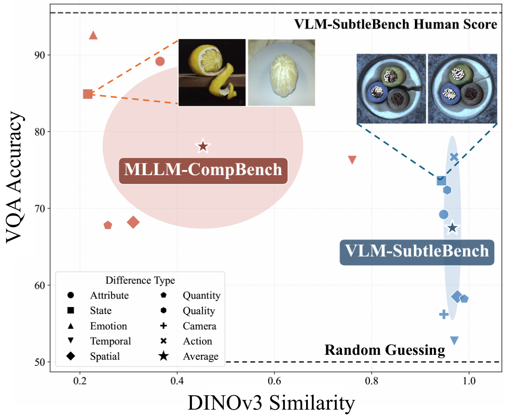
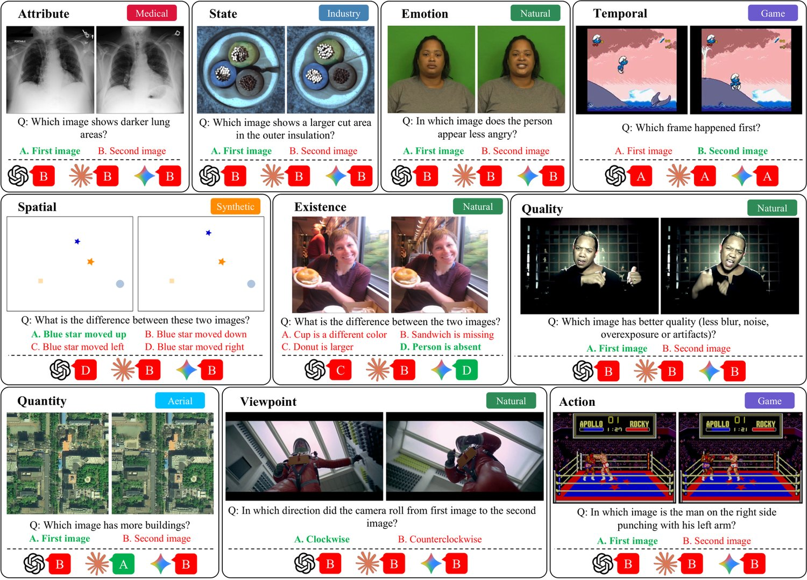
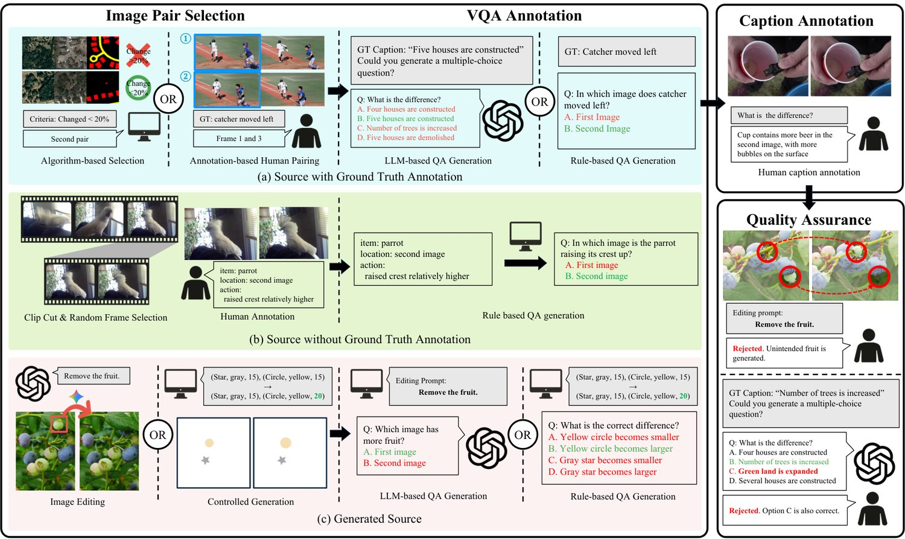
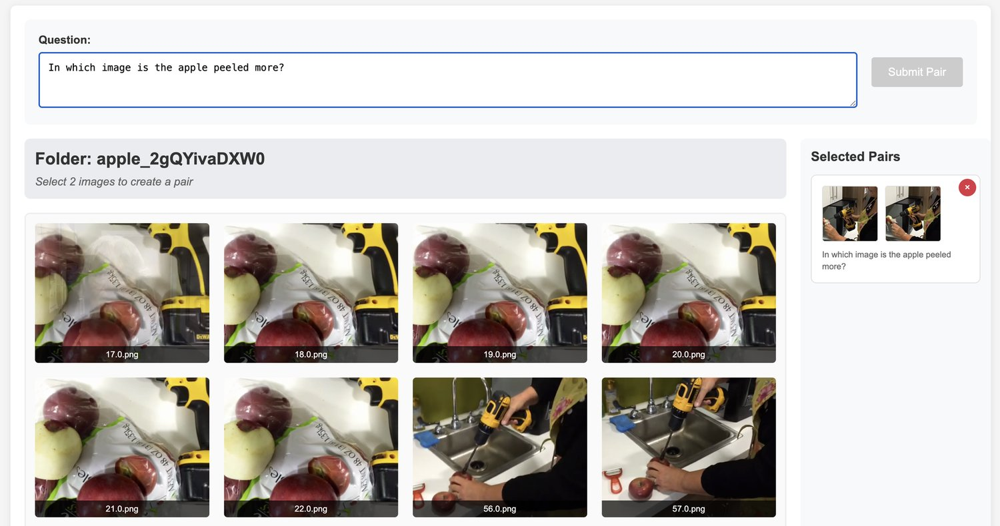
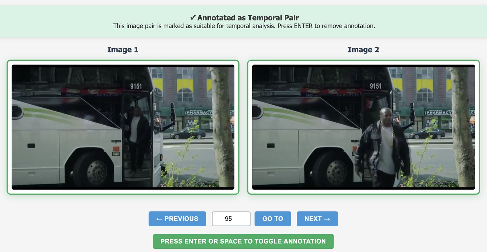
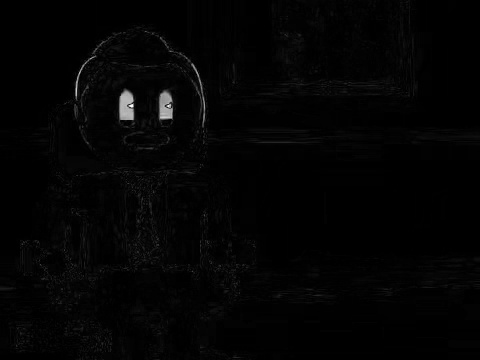
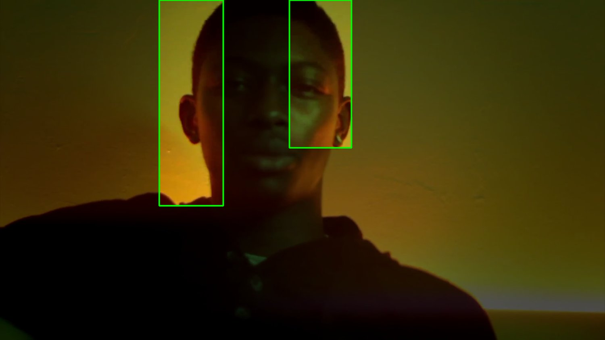
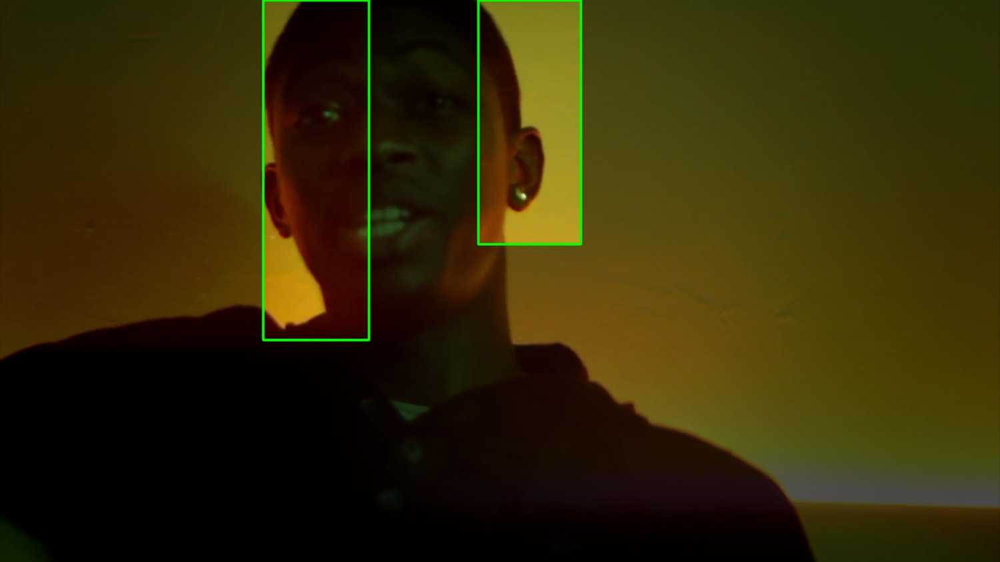

VLM-SubtleBench: How Far Are VLMs from Human-Level Subtle Comparative Reasoning?
The ability to distinguish subtle differences between visually similar images is essential for diverse domains such as industrial anomaly detection, medical imaging, and aerial surveillance. While comparative reasoning benchmarks for vision-language models (VLMs) have recently emerged, they primarily focus on images with large, salient differences and fail to capture the nuanced reasoning required for real-world applications. In this work, we introduce VLM-SubtleBench 11 1 Our dataset and code are available at https://huggingface.co/datasets/KRAFTON/VLM-SubtleBench and https://github.com/krafton-ai/VLM-SubtleBench. , a benchmark designed to evaluate VLMs on subtle comparative reasoning. Our benchmark covers ten difference types—Attribute, State, Emotion, Temporal, Spatial, Existence, Quantity, Quality, Viewpoint, and Action—and curate paired question–image sets reflecting these fine-grained variations. Unlike prior benchmarks restricted to natural image datasets, our benchmark spans diverse domains, including industrial, aerial, and medical imagery. Through extensive evaluation of both proprietary and open-source VLMs, we reveal systematic gaps between model and human performance across difference types and domains, and provide controlled analyses highlighting where VLMs’ reasoning sharply deteriorates. Together, our benchmark and findings establish a foundation for advancing VLMs toward human-level comparative reasoning.

图 1：VLM-SubtleBench 与 MLLM-CompBench 在 GPT-4o 上的比较。
The ability to discern subtle visual differences, i.e., minor discrepancies between otherwise similar objects, scenes, or situations, is central to human cognition. It enables us to perform a wide range of fine-grained comparative tasks, such as recognizing micro-expression changes in daily life (Li et al., 2022), detecting anomalies in manufacturing (Bergmann et al., 2019), assessing subtle variations in satellite imagery (Asokan and Anitha, 2019), and distinguishing disease stages in medical imaging (Litjens et al., 2017). Beyond everyday life, the capacity to detect and reason about such subtle differences has expanded human abilities toward higher forms of intelligence, underpinning advances from scientific discovery to complex social organization.
辨别细微视觉差异——即原本相似的物体、场景或情境之间的微小差别——的能力，是人类认知的核心。它使我们能够完成大量细粒度的比较任务，例如在日常生活中识别微表情变化（Li 等，2022）、在制造业中检测异常（Bergmann 等，2019）、评估卫星影像中的细微变化（Asokan 和 Anitha，2019），以及在医学影像中区分疾病分期（Litjens 等，2017）。在日常生活之外，检测并推理这类细微差异的能力，把人类的能力拓展到更高形式的智能，支撑了从科学发现到复杂社会组织的一系列进步。
Recently, vision-language models (VLMs) have shown remarkable progress toward artificial general intelligence (AGI), demonstrating promising results in various tasks, such as visual question answering (VQA) and scene description (Zhang et al., 2024). Yet, most progress has primarily centered on single visual inputs, e.g., an image or a video, while comparative tasks that require comparison over multiple inputs, e.g., two images, have received relatively little attention. However, narrowing this gap is increasingly important, as recent applications often deploy VLMs as agents to perform complex tasks involving comparative reasoning across multiple observations, e.g., self-reflection over previously observed scenes (Hong et al., 2024). To truly serve as human-level surrogates, advancing VLMs’ capacity for advanced comparative reasoning is becoming indispensable.
近来，视觉-语言模型（VLM）在通往通用人工智能（AGI）的道路上取得了显著进展，在视觉问答（VQA）与场景描述等任务上展现了可喜的结果（Zhang 等，2024）。然而，大部分进展主要围绕单一视觉输入（如一张图像或一段视频），而需要对多个输入（如两张图像）进行比较的比较式任务受到的关注相对较少。缩小这一差距正变得日益重要，因为近期应用常把 VLM 部署为智能体，去执行涉及跨多次观察的比较推理的复杂任务，例如对先前观察过的场景做自我反思（Hong 等，2024）。要真正充当人类水平的替代者，提升 VLM 的高级比较推理能力已不可或缺。
A few benchmarks have been presented to evaluate the comparative reasoning capabilities of VLMs. However, as shown in Figure 1, prior benchmarks focus on relatively simple comparisons between fairly dissimilar scenes, e.g., identifying differences in salient features (states) of distinct objects (two lemons), as indicated by the low average subtlety scores of MLLM-CompBench measured by embedding similarity with DINOv3 (Siméoni et al., 2025). As a result, they are easily solved by state-of-the-art VLMs, such as GPT-4o. In addition, most prior benchmarks are composed of natural images, and thus fail to assess performance in specialized domains such as industry or medical (See Table 1). Therefore, this calls for a new benchmark that can evaluate human-level subtle comparative reasoning across diverse domains and high-difficulty tasks.
已有若干基准被用于评测 VLM 的比较推理能力。然而如图 1 所示，已有基准关注的是差异相当大的场景之间相对简单的比较，例如识别不同物体（两个柠檬）显著特征（状态）上的差别——这一点可由 MLLM-CompBench 用 DINOv3 嵌入相似度（Siméoni 等，2025）测得的低平均细微度分数看出。因此，它们很容易被 GPT-4o 等最先进的 VLM 解决。此外，多数已有基准由自然图像构成，因而无法评估工业或医疗等专业领域上的性能（见表 1）。这就需要一个新的基准，能够跨多样领域、在高难度任务上评测人类水平的细微比较推理。

图 2：VLM-SubtleBench 的示例任务，覆盖十种差异类别（Attribute 属性、State 状态、Emotion 情绪、Temporal 时序、Spatial 空间、Existence 存在性、Quality 质量、Quantity 数量、Viewpoint 视角、Action 动作）与六个领域（natural 自然、game 游戏、medical 医疗、industry 工业、aerial 航拍、synthetic 合成）。每个示例中正确答案以绿色粗体高亮。每个问题下方依次给出 GPT-5-main、Claude-sonnet-4 与 Gemini-2.5-pro 的模型回答。因篇幅所限，部分 VQA 实例做了简化；完整版本与更多示例见附录。
To this end, we present VLM-SubtleBench, a benchmark designed to evaluate human-level comparative reasoning capabilities of VLMs. As illustrated in Figure 2, VLM-SubtleBench comprises 13K triplets of image pairs, questions, and answers, covering 10 representative difference types, i.e., Attribute, State, Emotion, Temporal, Spatial, Existence, Quality, Quantity, Viewpoint, and Action, collected from diverse image domains, i.e., Natural, Game, Industry, Aerial, Synthetic, and Medical. Even advanced proprietary VLMs such as GPT-5 and Gemini-2.5-pro exhibit significant performance gaps compared to humans, especially on difference types that demand spatial, temporal, and viewpoint reasoning.
为此，我们提出 VLM-SubtleBench——一个用于评测 VLM 人类水平比较推理能力的基准。如图 2 所示，VLM-SubtleBench 包含 13K 组「图像对—问题—答案」三元组，覆盖 10 种代表性差异类型，即 Attribute（属性）、State（状态）、Emotion（情绪）、Temporal（时序）、Spatial（空间）、Existence（存在性）、Quality（质量）、Quantity（数量）、Viewpoint（视角）与 Action（动作），数据取自多样的图像领域，即 Natural（自然）、Game（游戏）、Industry（工业）、Aerial（航拍）、Synthetic（合成）与 Medical（医疗）。即便是 GPT-5 与 Gemini-2.5-pro 这类先进的闭源 VLM，与人类相比仍存在显著的性能差距，在需要空间、时序与视角推理的差异类型上尤其明显。
We conduct systematic studies on the performance of open-source and proprietary VLMs, the effectiveness of test-time prompting strategies on comparative tasks, and controlled experiments with synthetic image pairs, which reveal the extent to which VLMs align with human performance and where their reasoning sharply deteriorates. Our findings show that (1) proprietary VLMs still leave large gaps from human performance, particularly on spatial, temporal, and viewpoint reasoning where even the best model trails humans by over 30 percentage points; (2) simple prompting strategies, such as chain-of-thought prompting, grid layouts, and overlapping images, yield only limited improvements; and (3) VLMs are highly sensitive to difficulty factors such as object size and count. Together, VLM-SubtleBench and our experimental studies provide critical insights toward narrowing the gap between VLMs and humans in subtle comparative reasoning.
我们系统研究了开源与闭源 VLM 的性能、测试时提示策略在比较任务上的有效性，以及用合成图像对所做的受控实验，由此揭示 VLM 在多大程度上与人类表现对齐，以及它们的推理在何处急剧退化。我们的发现表明：（1）闭源 VLM 距人类表现仍有很大差距，在空间、时序与视角推理上尤为突出，即便最好的模型也落后人类 30 个百分点以上；（2）思维链提示、网格布局、图像叠加等简单提示策略带来的改进十分有限；（3）VLM 对物体尺寸与数量等难度因素高度敏感。VLM-SubtleBench 与我们的实验研究共同为缩小 VLM 与人类在细微比较推理上的差距提供了关键洞察。
While most VLM benchmarks focus on single-image understanding (Liu et al., 2024b; Ying et al., 2024; Wu et al., 2024), a growing body of work evaluates multi-image reasoning. Early efforts such as NLVR2 (Suhr et al., 2019) and Winoground (Thrush et al., 2022) tested whether models can reason over image pairs through sentence verification and compositional matching, respectively. More recently, BLINK (Fu et al., 2024) evaluates core visual perception tasks such as relative depth and visual correspondence, exposing large human–model gaps on low-level visual skills. REMI (Kazemi et al., 2024) focuses on high-level relational reasoning, such as analogy and sequential pattern completion, across multiple images. MuirBench (Wang et al., 2025) provides a comprehensive suite of 12 multi-image task types, ranging from visual retrieval to scene understanding. While these benchmarks collectively advance multi-image evaluation, none are specifically designed to evaluate comparative reasoning between image pairs, identifying what has changed between two similar images. MLLM-CompBench (Kil et al., 2024) is the closest to our work, as it directly evaluates comparative judgments across eight difference types. Yet, its image pairs typically depict different subjects or settings with salient differences, as evidenced by their low average similarity scores (Figure 1). In contrast, VLM-SubtleBench focuses on subtle differences within nearly identical contexts, requiring genuine cross-image comparison (Table 1).
尽管多数 VLM 基准聚焦单图像理解（Liu 等，2024b；Ying 等，2024；Wu 等，2024），已有越来越多的工作评估多图像推理。NLVR2（Suhr 等，2019）与 Winoground（Thrush 等，2022）等早期工作分别通过句子验证与组合匹配，检验模型能否对图像对做推理。更近期地，BLINK（Fu 等，2024）评测相对深度、视觉对应等核心视觉感知任务，暴露出人与模型在低层视觉技能上的巨大差距。REMI（Kazemi 等，2024）关注跨多图像的高层关系推理，如类比与序列模式补全。MuirBench（Wang 等，2025）提供了涵盖 12 种多图像任务类型的综合套件，从视觉检索到场景理解不等。这些基准共同推动了多图像评测，却没有一个是专门为评测图像对之间的比较推理而设计的——即识别两张相似图像之间发生了什么变化。MLLM-CompBench（Kil 等，2024）与我们的工作最为接近，它直接评测跨八种差异类型的比较判断；但其图像对通常描绘不同的主体或场景，差异显著，这一点可由其较低的平均相似度分数佐证（图 1）。相比之下，VLM-SubtleBench 聚焦于近乎相同语境下的细微差异，要求进行真正的跨图像比较（表 1）。
表 1：比较推理基准综述。“是否细微？”一栏表示该基准是否包含 DINOv3 相似度平均至少为 0.8 的图像对，即差异是否细微。VLM-SubtleBench 是唯一一个聚焦细微比较、跨多样领域，且同时包含选择题与描述生成任务的基准。
| Benchmarks | Is Subtle? | # Domains | # Diff. Types | MCQ | Captioning |
|---|---|---|---|---|---|
| Birds-to-Words (Forbes et al., 2019) | ✗ | 1 | 1 | ✗ | ✓ |
| Spot-the-Diff (20) | ✓ | 1 | 1 | ✗ | ✓ |
| MLLM-CompBench (Kil et al., 2024) | ✗ | 1 | 8 | ✓ | ✗ |
| VLM-SubtleBench (Ours) | ✓ | 6 | 10 | ✓ | ✓ |
Detecting and describing visual differences has been studied across specialized domains. Spot-the-Diff (Jhamtani and Berg-Kirkpatrick, 2018) introduced textual descriptions of changes between surveillance frames, CLEVR-Change (Park et al., 2019) provided a synthetic testbed for change captioning, and Birds-to-Words (Forbes et al., 2019) collected fine-grained comparative descriptions of bird photographs. In the medical domain, MIMIC-Diff-VQA (Johnson et al., 2019) supports difference-focused VQA on chest X-ray pairs, while GeoBench (Lacoste et al., 2023) covers remote sensing tasks including change detection for Earth monitoring. While these works demonstrate the importance of difference understanding, each is confined to a single domain and a narrow set of difference types, leaving no unified benchmark that evaluates VLMs’ comparative reasoning across diverse visual distributions.
检测与描述视觉差异已在多个专业领域得到研究。Spot-the-Diff（Jhamtani 和 Berg-Kirkpatrick，2018）引入了监控帧之间变化的文本描述，CLEVR-Change（Park 等，2019）提供了用于变化描述生成的合成测试平台，Birds-to-Words（Forbes 等，2019）收集了鸟类照片的细粒度比较描述。在医疗领域，MIMIC-Diff-VQA（Johnson 等，2019）支持针对胸片图像对的聚焦差异的视觉问答，GeoBench（Lacoste 等，2023）则涵盖包括地球监测变化检测在内的遥感任务。这些工作虽证明了差异理解的重要性，但各自局限于单一领域与一组狭窄的差异类型，始终没有一个统一的基准来评测 VLM 跨多样视觉分布的比较推理。
A related line of work focuses on generating textual descriptions of image differences. Img-Diff (Jiao et al., 2025) constructs contrastive image pairs targeting object-level changes such as replacement and removal, OneDiff (Hu et al., 2025) aggregates multiple sources and trains a generalist model covering color, texture, and spatial changes, and DiffTell (Di et al., 2025) curates a high-quality dataset that further encompasses style and text manipulation. While these efforts advance difference captioning with larger-scale data and dedicated models, they primarily focus on natural images and the captioning task alone. Our benchmark complements this line of work by providing both VQA and captioning tasks across ten difference types and six domains, enabling a more comprehensive evaluation of comparative reasoning.
另一条相关研究路线关注生成图像差异的文本描述。Img-Diff（Jiao 等，2025）构建针对替换、移除等物体级变化的对比图像对；OneDiff（Hu 等，2025）聚合多个数据源并训练覆盖颜色、纹理与空间变化的通用模型；DiffTell（Di 等，2025）精心构建了一个高质量数据集，进一步涵盖风格与文字 manipulation。这些工作以更大规模的数据与专用模型推进了差异描述生成，但它们主要关注自然图像，且只涉及描述生成这一种任务。我们的基准对这条路线形成补充：同时提供跨十种差异类型与六个领域的 VQA 与描述生成任务，从而支持更全面的比较推理评测。
In this section, we introduce VLM-SubtleBench, a benchmark designed to evaluate subtle comparative reasoning capabilities of VLMs. VLM-SubtleBench focuses on whether models can reliably identify subtle differences between two highly similar images, a key aspect of comparative visual reasoning. In the following, Section 3.1 describes the scope of the benchmark, covering the visual domains and difference categories included. Section 3.2 details the dataset curation process, and Section 3.3 explains how caption annotations were performed to ensure high-quality textual descriptions. Section 3.4 presents dataset statistics that highlight the diversity of VLM-SubtleBench.
本节介绍 VLM-SubtleBench——一个用于评测 VLM 细微比较推理能力的基准。VLM-SubtleBench 关注模型能否可靠地识别两张高度相似图像之间的细微差异，这是比较式视觉推理的关键方面。下文安排如下：3.1 节描述基准的覆盖范围，包括所涉及的视觉领域与差异类别；3.2 节详述数据集构建流程；3.3 节说明描述标注如何进行，以保证文本描述的高质量；3.4 节给出体现 VLM-SubtleBench 多样性的数据集统计。
To evaluate whether a model possesses human-level subtle comparative reasoning across diverse, cognitively demanding tasks, it is essential to cover images from a wide range of domains. Thus, we design VLM-SubtleBench to span six representative image domains: Natural Scenes, capturing everyday real-world photographs (Abu-El-Haija et al., 2016; Lin et al., 2014; Souček et al., 2022; Cao et al., 2014; Livingstone and Russo, 2018; Kossaifi et al., 2017; Gupta et al., 2016; Zhou et al., 2025; Wang et al., 2024; Idrees et al., 2018; Lin et al., 2025); Game Environments, simulated yet realistic scenes that test generalization beyond natural images (Abu-El-Haija et al., 2016; Lin et al., 2025); Aerial Imagery, covering remote sensing and overhead views where subtle spatial differences are critical (Liu et al., 2024a; Huang et al., 2022); Industrial Inspection, representing structured settings where fine-grained defects or anomalies need to be detected (Bergmann et al., 2019; Bergmann et al., 2022); Medical Imaging, where diagnostic reasoning often requires distinguishing subtle changes across visits (Johnson et al., 2019; Hu et al., 2023); and Synthetic Primitives, consisting of abstract 2D shapes with varying colors and arrangements on plain backgrounds, which further allows controlled analysis.
要评估模型是否在多样且认知要求高的任务上具备人类水平的细微比较推理，就必须覆盖来自广泛领域的图像。因此我们设计 VLM-SubtleBench 横跨六个代表性图像领域：自然场景，收录日常真实照片（Abu-El-Haija 等，2016；Lin 等，2014；Souček 等，2022；Cao 等，2014；Livingstone 和 Russo，2018；Kossaifi 等，2017；Gupta 等，2016；Zhou 等，2025；Wang 等，2024；Idrees 等，2018；Lin 等，2025）；游戏环境，即仿真但逼真的场景，用于检验超越自然图像的泛化能力（Abu-El-Haija 等，2016；Lin 等，2025）；航拍影像，涵盖遥感与俯视视角，其中细微的空间差异至关重要（Liu 等，2024a；Huang 等，2022）；工业检测，代表需要检出细粒度缺陷或异常的结构化场景（Bergmann 等，2019；Bergmann 等，2022）；医学影像，其中诊断推理常需要区分多次就诊之间的细微变化（Johnson 等，2019；Hu 等，2023）；以及合成基元，由纯色背景上颜色与排布各异的抽象二维形状构成，可进一步支持受控分析。
We also design VLM-SubtleBench to cover diverse types of differences. Specifically, we follow the categorization proposed in Kil et al. (2024), while extending it by adding two new types of differences, Viewpoint and Action. In total, VLM-SubtleBench encompasses ten difference types: Attribute captures variations in object properties such as color, size, or shape; State reflects the condition of an object, such as whether an apple is peeled; Emotion addresses comparative judgments of facial expressions; Temporal involves identifying which image corresponds to a later stage of an event; Spatial describes changes in arrangement or relative position; Existence refers to whether an object is missing; Quantity handles whether the number of objects differs across images; Quality captures degradations such as blur, noise, or overexposure; Viewpoint reflects changes in camera perspective; and Action denotes differences in human or animal poses or activities. Together, these ten categories establish a comprehensive taxonomy of subtle differences, spanning from low-level visual variations to high-level semantic changes.
我们还设计 VLM-SubtleBench 以覆盖多样的差异类型。具体而言，我们沿用 Kil 等（2024）提出的分类体系，并在此基础上新增 Viewpoint（视角）与 Action（动作）两类差异。VLM-SubtleBench 共涵盖十种差异类型：Attribute（属性）刻画物体属性（如颜色、尺寸或形状）的变化；State（状态）反映物体的状态，例如苹果是否被削皮；Emotion（情绪）涉及对面部表情的比较判断；Temporal（时序）要求识别哪张图像对应事件的较晚阶段；Spatial（空间）描述排布或相对位置的变化；Existence（存在性）指物体是否缺失；Quantity（数量）处理两张图像中物体数量是否不同；Quality（质量）刻画模糊、噪声或过曝等退化；Viewpoint（视角）反映相机视角的变化；Action（动作）表示人或动物的姿态或活动差异。这十类共同构成了一个从低层视觉变化到高层语义变化的完整细微差异分类体系。

图 3：VLM-SubtleBench 的数据构建流程。
For each difference category, we curate paired images from diverse sources and generate comparative question-answer pairs through a mix of rule-based, annotation-driven, and model-assisted methods. Existing datasets with rich ground-truth labels and metadata enable systematic pairing and QA construction, while synthetic edits and primitives provide controlled settings for specific attributes. Below we briefly summarize the curation strategy for each category. Refer to appendix A for details.
对每个差异类别，我们从多种来源精心挑选成对图像，并通过基于规则、标注驱动与模型辅助相结合的方法生成比较式问答对。已有数据集带有丰富的真值标签与元数据，可支持系统化的配对与问答构建；而合成编辑与基元则为特定属性提供了受控条件。下面简要概括每个类别的构建策略，细节见附录 A。
We use four sources: MVTEC-AD (Bergmann et al., 2019) for industrial inspection, COCO (Lin et al., 2014) for natural images, MIMIC-Diff-VQA (Hu et al., 2023) for medical domain, and synthetic primitives. In MVTEC-AD, pairs are formed by selecting anomalies of the same type but with different severity, using pixel-level defect annotations to order defect size. In COCO, we first identify images containing a single object using instance segmentation annotations, then use GPT-4o to determine the object’s color and suggest a similar but distinct alternative color. We then apply the image editing model Gemini-2.5-flash-image-preview (also known as “nano-banana”) to change the object’s color accordingly, producing minimally different pairs. For the medical domain, we leverage MIMIC-Diff-VQA, which provides chest X-ray pairs from different visits of the same patient. We reformulate the original clinical questions into layperson-friendly forms using GPT-4o (e.g., “lung opacity progression” “Which image shows whiter lungs?”). For synthetic data, we render primitive scenes and apply subtle brightness or size modifications to a single object. QAs then ask which image has a larger defect, which color is stronger, which shape is bigger, or what change occurred.
我们使用四个来源：用于工业检测的 MVTEC-AD（Bergmann 等，2019）、用于自然图像的 COCO（Lin 等，2014）、用于医疗领域的 MIMIC-Diff-VQA（Hu 等，2023），以及合成基元。在 MVTEC-AD 中，通过选取同类型但严重程度不同的异常来构成图像对，并用像素级缺陷标注对缺陷尺寸排序。在 COCO 中，我们先用实例分割标注筛出只含单个物体的图像，再用 GPT-4o 判定该物体的颜色并给出一个相近但有别的替代颜色；随后用图像编辑模型 Gemini-2.5-flash-image-preview（又称 nano-banana）相应地改变物体颜色，从而产生差异最小的图像对。在医疗领域，我们利用 MIMIC-Diff-VQA——它提供同一患者不同就诊的胸片图像对；我们用 GPT-4o 把原始临床问题改写为外行也能理解的形式（例如，把“肺野密度进展”“哪张图像的肺更白？”）。合成数据方面，我们渲染基元场景，并对单个物体施加细微的亮度或尺寸修改。问答则询问哪张图像的缺陷更大、哪种颜色更浓、哪个形状更大，或发生了什么变化。
From MVTEC-AD, we focus on object breakage or cracks. Akin to attribute, image pairs are constructed by sampling images with different levels of damage, with annotations guiding the relative severity. The resulting QAs ask which crack is larger or which state shows more breakage. We also include natural domain pairs from ChangeIt (Souček et al., 2022), where human annotators manually annotated the state-modifying action together with the object states in a set of internet videos. From each video, we sample multiple frames based on the provided state information, and human annotators then select frame pairs that capture the object before and after the state-modifying action. The QA pairs then ask which image reflects a greater degree of state modification. For example, if the object is an apple and the action is peeling, the QA would ask “In which image is the apple peeled more?”.
在 MVTEC-AD 中，我们关注物体破损或裂纹。与 attribute 类似，图像对通过采样损坏程度不同的图像构成，并由标注指导相对严重程度的排序；所得问答询问哪道裂纹更大，或哪种状态破损更严重。我们还纳入来自 ChangeIt（Souček 等，2022）的自然领域图像对——该数据集中人工标注者在一组网络视频上手工标注了改变状态的行为以及物体状态。我们依据所提供的状态信息从每个视频中采样多帧，再由人工标注者挑选出能捕捉该行为前后物体状态的帧对。问答对随后询问哪张图像反映出更大程度的状态改变。例如，若物体是苹果、行为是削皮，问答便会问“哪张图像中的苹果被削得更多？”。
We draw images from emotional video datasets—CREMA-D, RAVDESS, AFEW-VA, and DAiSEE (Cao et al., 2014; Livingstone and Russo, 2018; Kossaifi et al., 2017; Gupta et al., 2016)—all of which provide clip-level emotion annotations. From these clips, we randomly sample frames and construct paired examples based on the relative intensity of expressed emotion. The QA pairs ask which image conveys a stronger or weaker emotion, based on the annotations.
我们从情绪视频数据集——CREMA-D、RAVDESS、AFEW-VA 与 DAiSEE（Cao 等，2014；Livingstone 和 Russo，2018；Kossaifi 等，2017；Gupta 等，2016）——中提取图像，它们都提供片段级的情绪标注。我们从这些片段中随机采样帧，并依据所表达情绪的相对强度构造成对样本。问答对依据标注询问哪张图像传达的情绪更强或更弱。
From YT8M (Abu-El-Haija et al., 2016) and VLM4D (Zhou et al., 2025) video datasets, we randomly select two frames from the same clip. Their temporal order is determined by timestamps, and QA pairs ask which image depicts the earlier event. This task requires models to capture temporal progression rather than static differences, sometimes relying on common-sense knowledge (e.g., a boat cutting through water can only move forward, not backward).
我们从 YT8M（Abu-El-Haija 等，2016）与 VLM4D（Zhou 等，2025）视频数据集中，对同一片段随机选取两帧。其时间先后由时间戳确定，问答对询问哪张图像描绘的是更早发生的事件。该任务要求模型捕捉时间推进，而非静态差异，有时还要依赖常识知识（例如，船破浪前行只能向前，不能向后）。
We use VLM4D, which provides 4D annotations of the object’s translational and rotational motions in video. From each video, we uniformly sample multiple frames. Human annotators then select frame pairs that visually align with the ground-truth motion annotations. Using these pairs and their associated motion data, we generate QA that ask the spatial changes resulting from the motion. The model is required to identify which transformation the object has undergone.
我们使用 VLM4D，它提供视频中物体平移与旋转运动的 4D 标注。我们从每个视频中均匀采样多帧，人工标注者再挑选出与真值运动标注在视觉上吻合的帧对。利用这些帧对及其关联的运动数据，我们生成询问运动所导致空间变化的问答；模型需要识别物体经历了哪种变换。
For aerial imagery, LEVIR-MCI (Liu et al., 2024a) provides image pairs of the same location across years, along with segmentation maps capturing object-level appearance or disappearance and human-labeled difference captions. We also construct synthetic settings by rendering primitives and removing one object to create a pair. Additionally, COCO is used to remove objects from natural images, similar to attribute. For synthetic data, we render primitive scenes containing multiple types of shapes and colors, and then add or remove one instance. In all cases, QAs ask what has disappeared or appeared between the two images, grounded in annotations or edit prompts.
在航拍影像方面，LEVIR-MCI（Liu 等，2024a）提供同一地点跨年份的图像对，并附带刻画物体级出现或消失的分割图以及人工标注的差异描述。我们也通过渲染基元并移除其中一个物体来构造合成条件下的图像对。此外，与 attribute 类似，COCO 被用于从自然图像中移除物体。合成数据方面，我们渲染含多种形状与颜色的基元场景，然后添加或移除一个实例。在所有情形下，问答都基于标注或编辑提示，询问两张图像之间消失或出现了什么。
We combine multiple domains to capture differences in object counts. MVTEC-LOCO (Bergmann et al., 2022) provides annotated anomaly and normal images, enabling comparisons of object multiplicity. UCF-QNRF (Idrees et al., 2018) offers crowded street scenes with dense human annotations, from which we sample pairs with count differences. Aerial imagery datasets (LEVIR-MCI, UBC (Huang et al., 2022)) allow comparisons of building counts. Synthetic datasets and Gemini-edited images (MegaFruit (Wang et al., 2024)) further introduce controlled object additions. QAs consistently ask which image contains more objects, people, or buildings. For synthetic data, we render primitive scenes containing a single type of shape and color, and then create quantity differences by adding or removing one instance of the shape. The QA pairs then ask which image contains more (or fewer) shapes.
我们结合多个领域来刻画物体数量的差异。MVTEC-LOCO（Bergmann 等，2022）提供带标注的异常图像与正常图像，可用于比较物体的多寡。UCF-QNRF（Idrees 等，2018）提供人群密集的街景与密集的人工标注，我们从中采样存在数量差异的图像对。航拍影像数据集（LEVIR-MCI、UBC（Huang 等，2022））可用于比较建筑数量。合成数据集与经 Gemini 编辑的图像（MegaFruit（Wang 等，2024））进一步引入了受控的物体添加。问答一致地询问哪张图像包含更多物体、人或建筑。合成数据方面，我们渲染只含单一类型与颜色形状的基元场景，再通过添加或移除该形状的一个实例来制造数量差异；问答对则询问哪张图像包含更多（或更少）形状。
From YT8M, we extract ten random frames per video and present them to human annotators, who select the frame with the best visual quality and the one with the worst, based on the presence of blur, noise, overexposure, or compression artifacts. The selected pair forms a quality comparison sample. Based on these annotations, we construct binary QA pairs that ask which image has better or worse quality.
我们从 YT8M 中为每个视频抽取十帧随机帧交给人工标注者，后者依据是否存在模糊、噪声、过曝或压缩伪影，从中选出视觉质量最好的一帧与最差的一帧。所选帧对构成一个质量比较样本。基于这些标注，我们构造二选一问答对，询问哪张图像质量更好或更差。
CameraBench (Lin et al., 2025) provides camera-centric and object-centric annotations describing translations and rotations. From each video, we uniformly sample frames, and human annotators then select pairs of frames that are visually aligned with ground-truth camera annotations (e.g., sufficient visual cues for viewpoint change). Based on these pairs, we construct binary QA tasks: for example, if the camera rotated to the right, the question asks “In which direction did the camera move?” with answer choices right or left. Similarly, for object-centric annotations, QAs ask whether the camera orbited an object clockwise or counterclockwise.
CameraBench（Lin 等，2025）提供以相机为中心与以物体为中心的标注，描述平移与旋转。我们从每个视频中均匀采样帧，人工标注者再挑选出与真值相机标注在视觉上吻合的帧对（例如视角变化有充分的视觉线索）。基于这些帧对，我们构造二选一问答任务：例如，若相机向右旋转，问题便问“相机向哪个方向移动？”，备选项为右或左。类似地，对于以物体为中心的标注，问答询问相机是顺时针还是逆时针绕物体运动。
In case of synthetic data, we render primitive scenes and simulate camera motion by translating the objects or by rotating them clockwise or counterclockwise around the center. From the six possible transformations, we randomly sample four options to form multiple-choice QAs, where the model must identify the ground-truth motion.
合成数据方面，我们渲染基元场景，并通过平移物体或让物体绕中心顺时针、逆时针旋转来模拟相机运动。从六种可能的变换中，我们随机采样四个选项构成选择题，模型必须识别出真值运动。
From YT8M, we sample pairs of frames that capture changes in human or object actions and interactions. For each pair, human annotators identify a salient entity whose action differs across the two frames and provide (i) the entity description and (ii) a short free-form action phrase for each frame. We then generate QA pairs using the template “In which image is the {item} {action}?” and minimally refine grammar with GPT-4o.
我们从 YT8M 中采样能捕捉人或物体动作与交互变化的帧对。对每个帧对，人工标注者找出一个在两帧之间动作存在差异的显著实体，并给出（i）该实体的描述与（ii）每帧对应的简短自由形式动作短语。随后我们用模板“In which image is the {item} {action}?”生成问答对，并用 GPT-4o 对语法做最小程度的润色。
图 4：VLM-SubtleBench 测试集的统计。
In practical scenarios across diverse VLM application domains, the ability to directly describe differences between two images is crucial. To enable such forms of evaluation, we additionally collected human-written captions explicitly highlighting the differences between paired images, thereby complementing the comparative QA tasks. We sampled 1,200 random image pairs (10% of the test split) for human caption annotation. Annotators were instructed to identify at least one difference between the two images and to write a comparative caption using the annotation interface.
在 VLM 各类应用领域的实际场景中，直接描述两张图像之间差异的能力至关重要。为支持这一评测形式，我们额外收集了人工撰写的描述，明确突出成对图像之间的差异，以此对比较式问答任务形成补充。我们随机采样 1,200 个图像对（占测试集的 10%）用于人工描述标注。标注者被要求至少找出两张图像之间的一处差异，并使用标注界面撰写一条比较式描述。
Each difference category contains at least 1K question–answer pairs, resulting in a total of 13K pairs. Every difference type includes data from the natural domain, where foundation models are most commonly applied in practice. We split the dataset into a test set (11.7K) and a validation set (1.3K). The test set is used for evaluation, while the validation set is used for fine-tuning models in our experiments. Figure 4 presents the statistics of VLM-SubtleBench test set.
每个差异类别至少包含 1K 个问答对，总计 13K 个。每种差异类型都包含自然领域的数据——基础模型在实践中被应用最多的领域。我们把数据集划分为测试集（11.7K）与验证集（1.3K）：测试集用于评测，验证集在我们的实验中用于微调模型。图 4 给出了 VLM-SubtleBench 测试集的统计。
We evaluate both open-source and proprietary vision–language models. For the open-source side, we use the Qwen2.5-VL (Bai et al., 2025) family at three scales (7B, 32B, and 72B), as well as LLaVA-NeXT and LLaVA-OneVision (both 7B). For proprietary models, we include GPT-4o (Achiam et al., 2023), o3, GPT-5-main, GPT-5-thinking, Claude-sonnet-4 (Anthropic, 2025), Gemini-2.5-flash (Team, 2025), and Gemini-2.5-pro. This set spans both non-reasoning models (e.g., GPT-4o, GPT-5-main) and reasoning-oriented models (e.g., o3, GPT-5-thinking).
我们同时评测开源与闭源视觉-语言模型。开源方面，我们使用三个规模（7B、32B 与 72B）的 Qwen2.5-VL（Bai 等，2025）系列，以及 LLaVA-NeXT 与 LLaVA-OneVision（均为 7B）。闭源方面，我们纳入 GPT-4o（Achiam 等，2023）、o3、GPT-5-main、GPT-5-thinking、Claude-sonnet-4（Anthropic，2025）、Gemini-2.5-flash（Team，2025）与 Gemini-2.5-pro。这一集合既涵盖非推理型模型（如 GPT-4o、GPT-5-main），也涵盖面向推理的模型（如 o3、GPT-5-thinking）。
To better understand the role of prompting, we experiment with several strategies. We adopt the standard Chain-of-Thought (CoT) approach, which encourages models to generate intermediate reasoning before producing final answers (Wei et al., 2022). We further introduce a two-step reasoning setup in which the VLM generates responses in two stages. In the first step, the VLM is prompted to describe the differences between the two images that are relevant to the question; in the second stage, the two images, the question, and the output from the first step are provided together to answer the question. We also augment images with a grid and instruct the models to parse them sequentially along the horizontal axis (Izadi et al., 2025). To investigate how models handle multiple images, we test different fusion techniques: (i) horizontally concatenating the two images into a single composite input, (ii) creating an overlap image by averaging the pixel values of the two input images and using it together with the original images, (iii) generating a grayscale subtraction image by computing the absolute pixel-wise difference, normalizing it by the maximum value to highlight regions of change, and providing it along with the original images, and (iv) highlighting regions of interest by retaining pixels with large differences, clustering adjacent pixels, and drawing bounding boxes around at most three of the largest clusters to emphasize the main regions of change. Further details of these prompting techniques are provided in Appendix B.2.
为更好地理解提示的作用，我们尝试了若干策略。我们采用标准的思维链（CoT）方法，鼓励模型在给出最终答案前先生成中间推理（Wei 等，2022）。我们进一步引入一种两阶段推理设置，让 VLM 分两步生成回答：第一步提示 VLM 描述两张图像之间与问题相关的差异；第二步把两张图像、问题以及第一步的输出一并输入，以回答问题。我们还为图像叠加网格，并指示模型沿水平轴依次解析（Izadi 等，2025）。为考察模型如何处理多张图像，我们测试了不同的融合方式：（i）把两张图像水平拼接为单一合成输入；（ii）通过对两张输入图像的像素值取平均生成叠加图像，并将其与原始图像一并提供；（iii）通过计算绝对逐像素差值生成灰度差分图，按最大值归一化以突出变化区域，并将其与原始图像一并提供；（iv）通过保留差异较大的像素、对相邻像素聚类，并在至多三个最大的聚类周围绘制边界框来高亮兴趣区域，以此强调主要的变化区域。这些提示技术的更多细节见附录 B.2。
We use task-appropriate metrics to evaluate model performance. For multiple-choice questions, performance is measured by accuracy, capturing the proportion of correct answers. For the captioning task, we apply cosine similarity score (CSS) (Reimers and Gurevych, 2019) and LLM-as-a-judge (Zheng et al., 2023; Lin et al., 2025), to assess the quality and relevance of generated captions. See Appendix B.3 for details on the CSS and LLM-as-a-judge evaluations.
我们用与任务相称的指标评测模型性能。对选择题，性能以准确率衡量，即正确回答所占比例。对描述生成任务，我们采用余弦相似度分数（CSS）（Reimers 和 Gurevych，2019）与 LLM 作为评判者（LLM-as-a-judge）（Zheng 等，2023；Lin 等，2025），以评估生成描述的质量与相关性。CSS 与 LLM-as-a-judge 评测的细节见附录 B.3。
表 2：开源与闭源视觉-语言模型在 VLM-SubtleBench 上的表现。人类评测在随机抽取的 10% 样本上进行。
| Model | AT | ST | EM | TM | SP | EX | QN | QL | VP | AC | AVG |
|---|---|---|---|---|---|---|---|---|---|---|---|
| Random Guess | 35.9 | 50.0 | 50.0 | 50.0 | 36.6 | 23.2 | 48.9 | 50.0 | 42.1 | 50.0 | 43.3 |
| Human Eval | 92.0 | 93.0 | 93.0 | 93.0 | 95.0 | 97.0 | 97.0 | 99.0 | 98.0 | 98.0 | 95.5 |
| Open-source | |||||||||||
| LLaVA-NeXT-7B | 37.0 | 51.3 | 51.8 | 47.4 | 37.3 | 25.6 | 49.5 | 48.0 | 43.7 | 46.9 | 43.6 |
| LLaVA-OneVision-7B | 41.6 | 56.8 | 73.9 | 48.7 | 35.5 | 44.2 | 54.9 | 62.7 | 49.1 | 60.5 | 52.0 |
| Qwen2.5-VL-7B | 46.5 | 63.7 | 87.8 | 50.2 | 39.5 | 73.8 | 58.0 | 70.9 | 47.5 | 69.3 | 59.4 |
| Qwen2.5-VL-32B | 48.3 | 64.0 | 85.3 | 50.4 | 43.6 | 84.2 | 67.5 | 72.5 | 47.4 | 72.0 | 62.2 |
| Qwen2.5-VL-72B | 53.9 | 68.9 | 85.9 | 49.9 | 47.8 | 81.7 | 67.7 | 78.4 | 56.2 | 74.1 | 65.4 |
| Proprietary | |||||||||||
| GPT-4o | 51.5 | 73.6 | 89.5 | 52.7 | 42.4 | 60.6 | 58.2 | 72.4 | 51.4 | 76.7 | 61.6 |
| o3 | 78.0 | 79.5 | 92.9 | 60.4 | 55.1 | 82.2 | 78.2 | 87.6 | 64.6 | 84.8 | 75.7 |
| GPT-5-main | 72.9 | 78.4 | 92.7 | 53.6 | 50.1 | 75.4 | 72.6 | 84.5 | 57.5 | 83.6 | 71.3 |
| GPT-5-thinking | 83.6 | 80.7 | 93.1 | 60.2 | 59.9 | 85.4 | 79.9 | 84.8 | 68.5 | 84.9 | 77.8 |
| Claude-sonnet-4 | 48.9 | 64.7 | 83.3 | 49.3 | 48.7 | 87.5 | 63.1 | 70.8 | 53.5 | 66.3 | 62.6 |
| Gemini-2.5-flash | 49.3 | 72.5 | 88.4 | 53.9 | 40.7 | 73.2 | 60.0 | 77.1 | 51.8 | 72.3 | 62.5 |
| Gemini-2.5-pro | 55.3 | 76.4 | 89.8 | 57.6 | 44.8 | 79.9 | 68.0 | 84.8 | 60.3 | 76.8 | 68.2 |
Table 2 summarizes the performance of proprietary and open-source VLMs on VLM-SubtleBench. Among proprietary models, GPT-5-thinking achieves the strongest results overall, ranking first in 7 out of the 10 difference types and yielding the highest average accuracy. Other reasoning-oriented models such as o3 and Gemini also show strong performance, highlighting the advantage of models explicitly designed for reasoning. Within the open-source models, Qwen2.5-VL-72B stands out with competitive accuracy, in some cases approaching that of proprietary systems. Among the 7B-scale models, Qwen2.5-VL-7B achieved the highest accuracy, followed by LLaVA-OneVision-7B, while LLaVA-NeXT-7B showed lowest performance.
表 2 汇总了闭源与开源 VLM 在 VLM-SubtleBench 上的表现。在闭源模型中，GPT-5-thinking 总体取得最强结果，在 10 种差异类型中的 7 种上排名第一，并取得最高的平均准确率。o3 与 Gemini 等其他面向推理的模型同样表现强劲，凸显了专为推理设计的模型的优势。在开源模型中，Qwen2.5-VL-72B 表现突出，准确率具有竞争力，某些情况下已接近闭源系统。在 7B 规模的模型中，Qwen2.5-VL-7B 准确率最高，其次是 LLaVA-OneVision-7B，而 LLaVA-NeXT-7B 表现最弱。
Across different difference types, VLMs show strong performance on emotion, with GPT-5-thinking achieving 93.1% accuracy. In contrast, all models perform weakly on temporal, spatial, and viewpoint differences, which require common-sense reasoning (e.g., predicting the future position of a person or distinguishing between object and camera motion) and spatial understanding. These findings underscore the need for VLMs to incorporate richer spatial–temporal representations.
在不同差异类型上，VLM 在情绪类上表现强劲，GPT-5-thinking 取得 93.1% 的准确率。相反，所有模型在时序、空间与视角差异上都表现薄弱——这些类型需要常识推理（例如预测人的未来位置，或区分物体运动与相机运动）与空间理解。这些发现说明，VLM 需要纳入更丰富的时空表征。
Table 3 presents the performance of VLMs on VLM-SubtleBench’s captioning task. Similar to VQA tasks, GPT-5-thinking achieves the strongest overall performance across all metrics. However, when captions are evaluated with the LLM-as-a-judge metric, its accuracy reaches only 43.0, leaving a noticeable gap compared to ground-truth captions. Large open-source VLMs, such as Qwen2.5-VL-32B/72B, perform on par with proprietary models in terms of CSS score, but exhibit substantially lower performance under the LLM-as-a-judge evaluation. In particular, Qwen2.5-VL-72B scores 24.3, which is significantly behind GPT-5-thinking’s 43.0.
表 3 给出了 VLM 在 VLM-SubtleBench 描述生成任务上的表现。与 VQA 任务类似，GPT-5-thinking 在所有指标上取得最强的总体表现。然而，当用 LLM-as-a-judge 指标评估描述时，其准确率仅为 43.0，与真值描述相比仍存在明显差距。Qwen2.5-VL-32B/72B 等大型开源 VLM 在 CSS 分数上与闭源模型相当，但在 LLM-as-a-judge 评测下表现大幅落后。特别是 Qwen2.5-VL-72B 得分 24.3，明显低于 GPT-5-thinking 的 43.0。
Table 4 reports the effect of different prompting strategies. Adding reasoning steps before the answer improved performance in 9 out of 10 domains. While such gains are intuitive in tasks like temporal that require world knowledge, it is particularly interesting that reasoning also boosts performance in tasks such as attribute and quality, where success hinges on capturing fine-grained visual differences. This suggests that explicit textual reasoning supports not only abstract inference but also subtle perceptual discrimination, consistent with our main finding that models with stronger inherent reasoning achieve higher accuracy. In contrast, the two-step reasoning approach leads to a slight decrease in performance. We observe that the model frequently produces intermediate descriptions indicating “no difference” in the first stage, which results in incorrect final predictions. The highlighting method yields a modest improvement in performance. It is particularly effective on datasets with limited variations (e.g., synthetic data); however, its performance declines on datasets exhibiting substantial variations in brightness or image quality (e.g., YT8M), where bounding boxes often fail to accurately localize regions of change.
表 4 报告了不同提示策略的效果。在给出答案前加入推理步骤，在 10 个领域中的 9 个上提升了性能。这类增益在需要世界知识的时序任务中很直观，但值得注意的是，推理在属性与质量等任务上同样带来提升——这些任务的成败取决于能否捕捉细粒度的视觉差异。这说明显式的文本推理不仅支持抽象推断，也有助于细微的感知辨别，与我们的主要发现一致：内在推理能力越强的模型准确率越高。相比之下，两阶段推理方法导致性能略有下降。我们观察到，模型在第一阶段常生成表示“没有差异”的中间描述，进而导致最终预测错误。高亮方法带来了适度的性能提升，它在变化有限的合成数据上尤其有效；但在亮度或图像质量变化较大的数据集（如 YT8M）上效果下降，此时边界框往往无法准确定位变化区域。
Other strategies generally led to performance drops. In particular, concatenating two images into a single input, a common setup in prior work (Kil et al., 2024; Jiao et al., 2025), degraded accuracy in 9 out of 10 domains. Overlap and subtract showed mixed effects: they yielded clear gains in spatial and existence tasks where only objects change under fixed views, and in viewpoint tasks where the scene is mostly static with camera movements. However, in other domains these strategies provided little or no benefit, reflecting their dependence on highlighting layout differences between images.
其他策略普遍导致性能下降。特别是把两张图像拼接为单一输入——这是前人工作中的常见设置（Kil 等，2024；Jiao 等，2025）——在 10 个领域中的 9 个上降低了准确率。叠加与差分的效果则好坏参半：在固定视角下只有物体发生变化的空间与存在性任务，以及场景基本静止、只有相机运动的视角任务上，它们带来明显增益；但在其他领域收效甚微或毫无收益，这反映出它们依赖于突出图像之间的布局差异。
| Model | CSS | LLM-Judge |
|---|---|---|
| Open-source | ||
| Qwen2.5-VL-7B | 0.42 | 12.7 |
| Qwen2.5-VL-32B | 0.52 | 22.7 |
| Qwen2.5-VL-72B | 0.54 | 24.3 |
| Proprietary | ||
| GPT-4o | 0.54 | 25.2 |
| o3 | 0.56 | 38.1 |
| GPT-5-main | 0.57 | 37.2 |
| GPT-5-thinking | 0.57 | 43.0 |
| Claude-sonnet-4 | 0.54 | 24.8 |
| Gemini-2.5-flash | 0.50 | 25.9 |
| Gemini-2.5-pro | 0.52 | 29.4 |
表 3：开源与闭源视觉-语言模型在 VLM-SubtleBench 描述生成任务上的表现。
图 5：GPT-4o 在受控难度因素下合成数据的性能热力图。
表 4：VLM-SubtleBench 中提示策略与微调的效果。
| Model | AT | ST | EM | TM | SP | EX | QN | QL | VP | AC | AVG |
|---|---|---|---|---|---|---|---|---|---|---|---|
| Random Guess | 35.9 | 50.0 | 50.0 | 50.0 | 36.6 | 23.2 | 48.9 | 50.0 | 42.1 | 50.0 | 43.3 |
| Prompting Strategies | |||||||||||
| GPT-5-main | 72.9 | 78.4 | 92.7 | 53.6 | 50.1 | 75.4 | 72.6 | 84.5 | 57.5 | 83.6 | 71.3 |
| + Reasoning | 76.5 | 79.1 | 91.2 | 56.1 | 51.6 | 80.2 | 75.8 | 86.1 | 57.0 | 85.4 | 73.1 |
| + Two-Step Reasoning | 70.8 | 79.1 | 93.4 | 56.9 | 47.4 | 81.3 | 66.4 | 83.5 | 58.0 | 83.6 | 71.0 |
| + Grid | 71.6 | 77.5 | 89.1 | 52.8 | 51.0 | 75.8 | 72.5 | 82.6 | 57.2 | 84.2 | 70.6 |
| + Concat | 70.3 | 77.9 | 92.2 | 51.6 | 44.6 | 75.5 | 64.8 | 81.2 | 52.3 | 82.4 | 68.2 |
| + Overlap | 69.5 | 76.7 | 91.8 | 52.4 | 53.6 | 76.1 | 69.1 | 79.0 | 58.8 | 83.0 | 70.2 |
| + Subtract | 73.8 | 76.4 | 91.8 | 50.9 | 55.4 | 78.0 | 69.8 | 80.1 | 60.0 | 82.0 | 71.2 |
| + Highlight | 71.1 | 75.2 | 92.0 | 51.1 | 54.9 | 86.5 | 74.3 | 77.8 | 57.3 | 82.9 | 71.5 |
| Fine-Tuning | |||||||||||
| Qwen-2.5-VL-7B | 46.5 | 63.7 | 87.8 | 50.2 | 39.5 | 73.8 | 58.0 | 70.9 | 47.5 | 69.3 | 59.4 |
| + Fine-tuned | 62.0 | 69.1 | 92.2 | 52.5 | 47.0 | 85.3 | 77.0 | 85.9 | 57.5 | 75.4 | 69.5 |
We leverage synthetic data generation to systematically manipulate task difficulty, which allows precise control over the factors that may cause VLMs to fail. For each difference type, we selected two primary factors that strongly influence difficulty and varied them along a controlled axis. Specifically, for attribute, we considered the size of changed objects and the magnitude of variation (brightness shifts in [0, 1] for color, or size-change ratios for scale). For spatial, we manipulated object size and the degree of translation. For existence and quantity, the two axes were object size and scene complexity, defined as the total number of objects. For viewpoint, we varied camera translation and scene complexity. For each configuration, we generated 100 paired images to probe VLM performance. Evaluation was performed using GPT-4o. Notably, for quantity differences, random guessing achieves 50%, while for the other categories the baseline is 25%.
我们利用合成数据生成来系统地操纵任务难度，从而精确控制可能导致 VLM 失败的因素。对每种差异类型，我们选取两个对难度影响最大的因素，并沿一条受控轴改变它们。具体而言：对 attribute，我们考虑被改变物体的尺寸与变化幅度（颜色对应 [0, 1] 区间的亮度偏移，或缩放的尺寸变化比例）；对 spatial，我们操纵物体尺寸与平移程度；对 existence 与 quantity，两条轴分别为物体尺寸与场景复杂度（定义为物体总数）；对 viewpoint，我们改变相机平移与场景复杂度。对每种配置，我们生成 100 对图像以探测 VLM 的性能。评测使用 GPT-4o 完成。值得注意的是，数量差异的随机猜测基线为 50%，而其他类别的基线为 25%。
Our experiments reveal distinct failure modes across difference types. For attribute (color), the decisive factor is the magnitude of brightness change: the model requires shifts of roughly 25% to show strong performance above 70%, while smaller changes, e.g., 5%, lead to random-like performance. In the attribute (size) condition, the model depends more on the absolute size of the changed object than on relative scaling, achieving reliable accuracy only when large objects undergo substantial transformations. For spatial differences, accuracy is largely influenced by both translation and object size, with the model responding more strongly to relative displacement than absolute pixel shifts; notably, smaller objects moving larger relative distances are easier to detect. In the existence setting, scene complexity emerges as the dominant factor: accuracy is nearly perfect with four or fewer objects but rapidly degrades to below 60% once scenes exceed 32 objects, though larger disappearing objects remain easier to track. Similarly, in quantity, performance remains high, nearly 80% in simple scenes with 5 objects, but drops to close to 60% in complex scene containing ten or more objects, approaching the 50% random baseline. Finally, for viewpoint, the model shows an interesting opposite trend: performance improves as scene complexity increases, benefiting from richer visual cues, and stable accuracy requires camera translations of around 160 pixels (which is 27% of the image height).
我们的实验揭示了不同差异类型各自独特的失效模式。对 attribute（颜色），决定性因素是亮度变化的幅度：模型需要大约 25% 的偏移才能取得 70% 以上的强劲表现，而更小幅度（如 5%）的变化则导致接近随机的表现。在 attribute（尺寸）条件下，模型更依赖被改变物体的绝对尺寸而非相对缩放比例，只有当大物体经历显著变换时才能取得可靠准确率。对 spatial 差异，准确率同时受平移量与物体尺寸的强烈影响，且模型对相对位移的响应强于绝对像素位移；值得注意的是，较小物体移动更大的相对距离时更容易被检测出来。在 existence 设置下，场景复杂度成为主导因素：物体不超过四个时准确率接近完美，但一旦场景物体超过 32 个，准确率便迅速退化到 60% 以下，不过较大的消失物体仍更容易被追踪。同样，在 quantity 上，含 5 个物体的简单场景中性能接近 80% 的高位，但在含十个及以上物体的复杂场景中降至接近 60%，逼近 50% 的随机基线。最后，对 viewpoint，模型呈现出一种有趣的相反趋势：随着场景复杂度增加，性能反而提升，得益于更丰富的视觉线索；而要获得稳定的准确率，相机平移量需达到约 160 像素（相当于图像高度的 27%）。
To evaluate whether additional supervision can mitigate the comparative reasoning challenge, we fine-tune Qwen2.5-VL-7B using the validation set. Table 4 presents the results. Fine-tuning yields consistent performance improvements across all difference types, with particularly notable gains in existence, quantity, and quality categories. In contrast, the spatial and temporal dimensions showed more modest gains, suggesting that richer spatial–temporal reasoning rather than in-distribution adaptation may be required for further progress. Despite these improvements, a substantial gap remains compared to GPT-5-thinking and human performance, indicating that broader data diversity and advanced training method could offer promising future directions beyond the present scope. Details on fine-tuning are provided in Appendix B.5.
为评估额外监督能否缓解比较推理的困难，我们用验证集微调 Qwen2.5-VL-7B。表 4 给出了结果。微调在所有差异类型上都带来了稳定的性能提升，在存在性、数量与质量类别上增益尤为显著。相比之下，空间与时序维度的增益较为有限，说明要取得进一步进展，可能需要更丰富的时空推理，而不仅是分布内适应。尽管有这些改进，与 GPT-5-thinking 及人类表现相比仍存在可观差距，表明更广泛的数据多样性与更先进的训练方法可能成为超越本文范围的有前景的未来方向。微调细节见附录 B.5。
| MMAD | QAG | |
|---|---|---|
| VLM-SubtleBench | 0.8424 | 0.7212 |
| MLLM-CompBench | 0.8110 | 0.7195 |
表 5：我们的基准与 MLLM-CompBench 同 MMAD 和 QAG 的秩相关。
| MMAD | QAG | |
|---|---|---|
| Qwen2.5-VL-7B | 65.0 | 34.4 |
| + VLM-SubtleBench | 69.6 | 35.5 |
| + MLLM-CompBench | 66.3 | 32.2 |
表 6：在各基准上微调后的下游性能。
We assess the real-world relevance of VLM-SubtleBench through correlation and transfer studies on industrial anomaly detection (MMAD (Jiang et al., 2025)) and aerial surveillance (QAG-360k (Li et al., 2024)), both requiring fine-grained visual discrimination. Table 5 reports the rank correlations (Spearman, 1904) between each benchmark and the downstream tasks. Across models, our benchmark shows higher rank correlations with MMAD and QAG-360K than MLLM-CompBench, suggesting that it better captures the comparative cues underlying downstream performance. Model-wise results are summarized in Appendix C.1.
我们通过在工业异常检测（MMAD（Jiang 等，2025））与航拍监控（QAG-360k（Li 等，2024））上的相关性研究与迁移研究，评估 VLM-SubtleBench 的现实相关性——这两者都需要细粒度的视觉辨别。表 5 报告了各基准与下游任务之间的秩相关（Spearman，1904）。跨模型来看，我们的基准与 MMAD、QAG-360K 的秩相关高于 MLLM-CompBench，说明它更好地捕捉了支撑下游性能的比较线索。各模型层面的结果汇总于附录 C.1。
To evaluate practical transfer, we fine-tune Qwen2.5-VL-7B on a validation split of VLM-SubtleBench and compare it with an equally sized subset of MLLM-CompBench. Table 6 reports the resulting downstream accuracies on MMAD and QAG-360K. Fine-tuning on VLM-SubtleBench yields larger gains on both application benchmarks, whereas fine-tuning on MLLM-CompBench provides limited or even negative transfer. These results indicate that the subtle, fine-grained difference types in VLM-SubtleBench more effectively encode cues for real-world perceptual reasoning.
为评估实际的迁移效果，我们在 VLM-SubtleBench 的验证划分上微调 Qwen2.5-VL-7B，并与规模相当的 MLLM-CompBench 子集做比较。表 6 报告了由此得到的 MMAD 与 QAG-360K 上的下游准确率。在 VLM-SubtleBench 上微调在两个应用基准上都带来更大的增益，而在 MLLM-CompBench 上微调的迁移效果有限，甚至为负。这些结果表明，VLM-SubtleBench 中细微、细粒度的差异类型能更有效地编码面向现实感知推理的线索。
We introduce VLM-SubtleBench, a benchmark for evaluating subtle comparative reasoning in vision–language models. VLM-SubtleBench focuses on image pairs with subtle changes across ten difference types and six domains, where humans succeed but current VLMs struggle significantly. Our evaluation reveals systematic model–human gaps across difference types and domains, and controlled synthetic studies expose consistent failure modes, positioning VLM-SubtleBench as both a rigorous benchmark and a diagnostic tool for future model development.
我们提出 VLM-SubtleBench——一个用于评测视觉-语言模型细微比较推理能力的基准。VLM-SubtleBench 聚焦于跨十种差异类型与六个领域、带有细微变化的图像对：在这些任务上人类能够胜任，而当前的 VLM 却显著吃力。我们的评测揭示了模型与人类在各类差异类型与领域上的系统性差距，而受控的合成研究暴露出一致的失效模式，使 VLM-SubtleBench 既是一个严格的基准，也是面向未来模型开发的诊断工具。
Detecting subtle visual changes is a core requirement for VLM-based agents operating in dynamic environments. In game environments, where LLM agents must interpret complex visual states across diverse genres (Park et al., 2026), perceiving fine-grained changes such as character movements is crucial, and VLM-SubtleBench can serve as a diagnostic tool for such perceptual capability. In robotic manipulation and navigation, detecting minute changes in object pose or state is essential for reliable physical interaction. In GUI agent scenarios, recognizing subtle interface changes such as a button becoming enabled is critical for executing correct actions.
检测细微的视觉变化，是在动态环境中运行的基于 VLM 的智能体的一项核心要求。在游戏环境中，大语言模型智能体必须解读跨多种类型的复杂视觉状态（Park 等，2026），感知角色移动等细粒度变化至关重要，而 VLM-SubtleBench 可充当这类感知能力的诊断工具。在机器人操作与导航中，检测物体位姿或状态的微小变化对可靠的物理交互不可或缺。在 GUI 智能体场景中，识别按钮变为可用等细微界面变化，对执行正确动作至关重要。
Table 7 provides a detailed breakdown of the test split by difference type, domain, and data source.
表 7 按差异类型、领域与数据来源给出了测试划分的详细分解。
表 7：每种差异类型、领域与来源下的测试样本数量。
| Type | Domain | Source | # |
| Attribute | Natural | COCO | 114 |
| Industry | MVTEC-AD | 300 | |
| Medical | MIMIC-Diff-VQA | 330 | |
| Synthetic | Synthetic | 700 | |
| State | Natural | ChangeIt | 465 |
| Industry | MVTEC-AD | 586 | |
| Emotion | Natural | CREMA-D, RAVDESS, AFEW-VA, DAiSEE | 1007 |
| Temporal | Natural | YT8M | 613 |
| Natural | VLM4D | 292 | |
| Game | YT8M | 104 | |
| Spatial | Natural | VLM4D | 520 |
| Synthetic | Synthetic | 600 | |
| Existence | Natural | COCO | 98 |
| Aerial | LEVIR-MCI | 394 | |
| Synthetic | Synthetic | 600 | |
| Quantity | Natural | MegaFruits | 330 |
| Natural | UCF-QNRF-ECC | 66 | |
| Natural | UBC | 133 | |
| Natural | ChangeIt | 58 | |
| Aerial | LEVIR-MCI | 49 | |
| Industry | MVTEC-LOCO | 234 | |
| Synthetic | Synthetic | 500 | |
| Quality | Natural | YT8M | 952 |
| Game | YT8M | 55 | |
| Viewpoint | Natural | CameraBench | 1080 |
| Synthetic | Synthetic | 500 | |
| Action | Natural | YT8M | 916 |
| Game | YT8M | 92 |
MVTEC-AD (Bergmann et al., 2019) data are used to construct the attribute dataset. Each defect type is categorized as either attribute (e.g., color anomaly, contamination, glue residue) or state (e.g., crack, cut, hole); defect types that cannot be meaningfully compared in terms of severity (e.g., missing components, spatial misplacements) are excluded. For each defect type, pairs are formed between two anomaly images of the same type but with different defect sizes. Defect size is measured as the percentage of defective pixels relative to the total image area, computed from pixel-level ground-truth masks. We select pairs whose defect sizes differ by at least 0.2%, with up to 15 pairs sampled per defect type. QA pairs then ask which image shows a larger or smaller defect area.
MVTEC-AD（Bergmann 等，2019）数据被用于构建 attribute 数据集。每种缺陷类型被归为 attribute（如颜色异常、污染、胶残留）或 state（如裂纹、切口、孔洞）；无法在严重程度上有意义地比较的缺陷类型（如缺失部件、空间错位）被排除。对每种缺陷类型，在同类型、缺陷尺寸不同的两张异常图像之间构造图像对。缺陷尺寸按缺陷像素占整幅图像面积的百分比来衡量，由像素级真值掩膜计算得到。我们选取缺陷尺寸相差至少 0.2% 的图像对，每种缺陷类型最多采样 15 对。问答对随后询问哪张图像显示更大或更小的缺陷区域。
COCO (Lin et al., 2014) data are also used. We first identify images containing a single object using COCO instance segmentation annotations, filtering by object-to-image area ratio (0.5–10%). GPT-4o is then prompted with the bounding-box-annotated image to simultaneously determine the object’s primary color, suggest a similar but distinguishable alternative (e.g., red orange), and generate the corresponding QA pair. The image editing model Gemini-2.5-flash-image-preview (nano-banana) applies the color change. All edited images are manually checked by human annotators, who verify that the color change matches the intended specification and that the QA pair accurately reflects the applied modification.
COCO（Lin 等，2014）数据同样被使用。我们先用 COCO 实例分割标注筛出只含单个物体的图像，并按物体占图像面积的比例（0.5%–10%）过滤。随后向 GPT-4o 输入带边界框标注的图像，让它同时判定该物体的主色、给出一个相近但可区分的替代色（例如红色 橙色），并生成相应的问答对。图像编辑模型 Gemini-2.5-flash-image-preview（nano-banana）负责施加颜色改变。所有编辑后的图像都由人工标注者逐一检查，核实颜色改变符合预期设定，且问答对准确反映了所施加的修改。
MIMIC-Diff-VQA (Hu et al., 2023), built on the MIMIC-CXR dataset (Johnson et al., 2019), provides chest X-ray pairs from different visits of the same patient along with comparative clinical questions. Since our benchmark focuses on visually perceptible differences independent of medical expertise, we reformulate the original clinical questions into layperson-friendly forms using GPT-4o (e.g., converting “lung opacity progression” into “Which image shows whiter lungs?”). Annotators then verify the consistency between the reformulated questions and the corresponding image pairs.
MIMIC-Diff-VQA（Hu 等，2023）建立在 MIMIC-CXR 数据集（Johnson 等，2019）之上，提供同一患者不同就诊的胸片图像对以及比较式临床问题。由于我们的基准聚焦于不依赖医学专业知识的、视觉上可感知的差异，我们用 GPT-4o 把原始临床问题改写为外行也能理解的形式（例如把“lung opacity progression”改写为“Which image shows whiter lungs?”）。随后由标注者核实改写后的问题与相应图像对之间的一致性。
Synthetic. We render scenes containing 2–10 shapes (circles, squares, and triangles) with distinct colors on an 800600 white background. One shape is randomly selected, and either a brightness adjustment or a size modification is applied. For brightness changes, we shift the lightness channel () in OKLAB color space by 5–10%, producing a subtly brighter or darker variant of the same hue. For size changes, we scale the selected shape by 15–20%. The resulting QA pairs ask which transformation occurred and to which object, with three distractors formed by combining the wrong shape, wrong color, or opposite direction of change.
合成数据。我们在 800600 的白色背景上渲染含 2–10 个形状（圆形、正方形与三角形）且颜色各异的场景。随机选取其中一个形状，对其施加亮度调整或尺寸修改。亮度变化方面，我们在 OKLAB 色彩空间中把明度通道（）偏移 5%–10%，生成同一色相下略亮或略暗的变体。尺寸变化方面，我们把所选形状缩放 15%–20%。所得问答对询问发生了哪种变换以及发生在哪个物体上，三个干扰项由错误的形状、错误的颜色或相反的变化方向组合而成。
MVTEC-AD pairs constructed in Section A.1 are also used for state differences, since some anomalies pertain to state rather than attribute.
A.1 节构造的 MVTEC-AD 图像对也被用于 state 差异，因为其中部分异常属于状态而非属性。
ChangeIt (Souček et al., 2022) contains annotations of state-modifying actions and resulting object states in internet videos. A subset of the videos is manually annotated, and we use this portion of the data. From each video, we sample multiple frames corresponding to either state1, action, or state2. Based on object and action, we automatically generate questions. For example, if the object is an apple and the action is peeling, the question becomes: In which image is the apple peeled more? Annotators then select frame pairs in which the state-modifying action is more evident in the second frame (Figure 6).
ChangeIt（Souček 等，2022）包含对网络视频中改变状态的行为以及所导致的物体状态的标注。其中一部分视频经过人工标注，我们使用的是这部分数据。我们从每个视频中采样与 state1、action 或 state2 相对应的多帧。依据物体与行为，我们自动生成问题。例如，若物体是苹果、行为是削皮，问题便成为：哪张图像中的苹果被削得更多？标注者随后挑选出第二帧中改变状态的行为更为明显的帧对（图 6）。

图 6：面向带有真值标注的来源（ChangeIt）的标注界面示例。标注者依据所提供的标签，从预先采样的候选帧中挑选帧对。
CREMA-D, RAVDESS, AFEW-VA, and DAiSEE (Cao et al., 2014; Livingstone and Russo, 2018; Kossaifi et al., 2017; Gupta et al., 2016) are clip-level video datasets annotated for emotion. Specifically, CREMA-D and RAVDESS consist of actors speaking sentences with specified emotions and intensity levels. AFEW-VA contains movie clips annotated with valence and arousal, while DAiSEE provides short video snippets capturing users’ emotions. From these clips, we randomly sample frames and construct paired examples based on the relative intensity of expressed emotions. For question generation, we use the labeled emotion categories; in the case of AFEW-VA, which lacks explicit emotion labels, annotators are asked to choose the most appropriate emotion depicted in the scene.
CREMA-D、RAVDESS、AFEW-VA 与 DAiSEE（Cao 等，2014；Livingstone 和 Russo，2018；Kossaifi 等，2017；Gupta 等，2016）都是带有情绪标注的片段级视频数据集。具体而言，CREMA-D 与 RAVDESS 由演员以指定情绪与强度等级说出句子构成；AFEW-VA 包含带有效价与唤醒度标注的电影片段；DAiSEE 则提供捕捉用户情绪的短视频片段。我们从这些片段中随机采样帧，并依据所表达情绪的相对强度构造成对样本。问题生成使用已标注的情绪类别；对于缺少显式情绪标签的 AFEW-VA，则请标注者选择场景中最恰当的所绘情绪。
VLM4D (Zhou et al., 2025) is a benchmark designed to evaluate the spatiotemporal reasoning capabilities of video LLMs. It provides video clips depicting exocentric and egocentric movements of people, animals, or objects, along with VQA tasks about their motion. Annotators select frame pairs that reflect the corresponding spatial change. When movement cannot be reversed (e.g., a person riding a bicycle or running), annotators label the sample as temporal. Only samples labeled as temporal are used to form the temporal pairs.
VLM4D（Zhou 等，2025）是一个用于评测视频大语言模型时空推理能力的基准。它提供描绘人、动物或物体的外部视角运动与自我中心运动的视频片段，以及关于其运动的 VQA 任务。标注者挑选能反映相应空间变化的帧对。当运动不可逆时（例如人骑自行车或跑步），标注者把该样本标为 temporal。只有被标为 temporal 的样本被用于构成时序图像对。
For the temporal subset, we generate questions that ask about the temporal order of the two frames. Specifically, we use two templates: “Which frame happened first?” and “Which frame happened later?”
对时序子集，我们生成询问两帧时间先后的问题。具体而言，我们使用两个模板：“Which frame happened first?”与“Which frame happened later?”。
YT8M (Abu-El-Haija et al., 2016) contains a diverse collection of YouTube videos spanning numerous domains. For each video, we segment clips using histogram matching and construct image pairs by randomly selecting frames with cosine similarity below 0.99, thereby avoiding frame extraction from frozen screens. Annotators then select frame pairs whose order cannot be reversed, marking them as temporal pairs (Figure 7).
YT8M（Abu-El-Haija 等，2016）包含涵盖众多领域的多样化 YouTube 视频集合。对每个视频，我们用直方图匹配切分片段，并通过随机选取余弦相似度低于 0.99 的帧来构造图像对，从而避免从定格画面中抽帧。标注者随后挑选出先后顺序不可逆转的帧对，将其标为时序图像对（图 7）。

图 7：面向不带有真值标注的来源（YT8M temporal）的标注界面示例。标注者为每个帧对提供标签（例如时间顺序是否不可逆）。
VLM4D is used to construct the spatial data. We collect frame pairs following the same procedure described in Section A.4. Samples labeled as temporal (i.e., non-reversible motions) are used to form the temporal pairs. For the spatial pairs, we use both reversible and non-reversible samples.
VLM4D 被用于构建 spatial 数据。我们按 A.4 节所述的相同流程收集帧对。被标为 temporal（即不可逆运动）的样本用于构成时序图像对；对于空间图像对，我们同时使用可逆与不可逆的样本。
We then adapt the original VQA questions into a comparative form using GPT-4o. For example, if the original question is “Which direction is the horse moving towards?” with the answer “left”, we reformulate it as “In which image is the horse relatively in a left position?” In addition, we also generate a counter-directional variant by flipping the direction (e.g., “right”), in which case the correct answer becomes the earlier frame.
随后我们用 GPT-4o 把原始 VQA 问题改写为比较形式。例如，若原始问题是“Which direction is the horse moving towards?”且答案为“left”，我们改写为“In which image is the horse relatively in a left position?”。此外，我们还通过翻转方向（例如“right”）生成一个反向变体，此时正确答案变为较早的那一帧。
LEVIR-MCI (Liu et al., 2024a) is an aerial dataset for image change detection. A subset of the data includes captions describing changes within the same region. We construct image pairs in which less than 20% of the total area has changed, further filtering for pairs with cosine similarity greater than 0.8. GPT-4o is then employed to paraphrase the captions in order to generate answers and distractors for the before and after images, and to determine whether each question pertains to existence or quantity.
LEVIR-MCI（Liu 等，2024a）是一个面向图像变化检测的航拍数据集。其中一部分数据带有描述同一区域内变化的文字说明。我们构造变化面积占总面积不到 20% 的图像对，并进一步筛选出余弦相似度大于 0.8 的图像对。随后用 GPT-4o 对这些描述做改写，以生成面向变化前后图像的答案与干扰项，并判断每个问题属于存在性还是数量。
COCO (Lin et al., 2014) is also used for existence pairs. We select images containing 1–10 objects with individual area ratios between 1% and 5% of the image. For each image, the largest object is chosen as the removal target. GPT-4o is prompted with the bounding-box-annotated image to generate a removal instruction and the corresponding QA pair. The image editing model Gemini-2.5-flash-image-preview (nano-banana) then removes the specified object. Human annotators verify that the removal is clean and that the QA pair accurately reflects the change.
COCO（Lin 等，2014）同样被用于构造 existence 图像对。我们选取含 1–10 个物体、单个物体面积占图像 1%–5% 的图像。对每张图像，选取最大的物体作为移除目标。向 GPT-4o 输入带边界框标注的图像，以生成移除指令与相应的问答对。图像编辑模型 Gemini-2.5-flash-image-preview（nano-banana）随后移除指定物体。人工标注者核实移除是否干净，以及问答对是否准确反映了这一变化。
Synthetic. We render scenes containing 20–30 background shapes of uniform size (35 pixels) with random types, colors, and rotations on an 800600 white canvas. One shape is randomly selected as the target and either removed from or added to the second image, while all other shapes remain unchanged. The resulting QA pairs ask what has appeared or disappeared, with three distractors formed from unchanged background shapes paired with random appeared/disappeared labels.
合成数据。我们在 800600 的白色画布上渲染含 20–30 个尺寸统一（35 像素）、类型、颜色与旋转随机的背景形状的场景。随机选取其中一个形状作为目标，从第二张图像中移除或添加该形状，其余所有形状保持不变。所得问答对询问出现了什么或消失了什么，三个干扰项由未变化的背景形状配上随机的“出现/消失”标签构成。
MVTEC-LOCO (Bergmann et al., 2022) data are used to construct the quantity dataset. For each product category (e.g., juice bottle, screw bag, pushpins), we identify anomaly images with quantity-related defects (e.g., additional or missing screws, nuts, or washers) using the ground-truth defect annotations provided in the dataset’s configuration. Each anomaly image is then paired with its visually closest normal image, selected by computing DINOv3 feature cosine similarity between the anomaly and all available normal images. QA pairs ask which image contains more or fewer of the specified item.
MVTEC-LOCO（Bergmann 等，2022）数据被用于构建 quantity 数据集。对每个产品类别（如果汁瓶、螺丝袋、图钉），我们利用数据集配置中提供的真值缺陷标注，找出带有数量相关缺陷（如多出或缺失螺丝、螺母或垫圈）的异常图像。随后把每张异常图像与其视觉上最接近的正常图像配对——通过计算该异常图像与所有可用正常图像之间的 DINOv3 特征余弦相似度来选取。问答对询问哪张图像包含更多或更少的指定物品。
ChangeIt data featuring “pouring” actions are repurposed for quantity differences. Frame pair selection follows the same annotation procedure described in Section A.2. Since pouring increases the amount of liquid in a container, the resulting QA pairs ask “Which image has more {liquid} been poured?”, where the liquid type varies across videos (e.g., beer, juice, milk, tea).
ChangeIt 中涉及“倾倒”行为的数据被改用于数量差异。帧对选取遵循 A.2 节所述的相同标注流程。由于倾倒会增加容器中的液体量，所得问答对询问“Which image has more {liquid} been poured?”，其中液体类型随视频而变（如啤酒、果汁、牛奶、茶）。
LEVIR-MCI data related to quantity are also included. We follow the same annotation method described in Section A.6.
LEVIR-MCI 中与数量相关的数据同样被纳入。我们沿用 A.6 节所述的相同标注方法。
MegaFruits, UCF-QNRF-ECC, and UBC (Wang et al., 2024; Idrees et al., 2018; Huang et al., 2022) are datasets containing multiple instances of fruits, people, or buildings. Annotators first draw a bounding box around a selected object in the image. A black box of the same size is then overlaid on the image, after which nano-banana is tasked with inpainting the region while ensuring that no new object is introduced. In this way, we obtain modified images in which one or more objects have been removed. The resulting QA pairs ask “Which image has {fewer, more} {object}?”, where the object type depends on the source dataset (e.g., blueberries, peaches, or strawberries for MegaFruits; people for UCF-QNRF-ECC; buildings for UBC).
MegaFruits、UCF-QNRF-ECC 与 UBC（Wang 等，2024；Idrees 等，2018；Huang 等，2022）是包含水果、人群或建筑等多个实例的数据集。标注者先在图像中围绕选定物体画一个边界框，随后在图像上覆盖一个同样大小的黑框，再让 nano-banana 对该区域做修复补全，并确保不引入新物体。通过这种方式，我们得到移除了一个或多个物体的修改后图像。所得问答对询问“Which image has {fewer, more} {object}?”，其中物体类型取决于来源数据集（例如 MegaFruits 对应蓝莓、桃子或草莓；UCF-QNRF-ECC 对应人；UBC 对应建筑）。
Synthetic. We render scenes containing 10–20 shapes of a single type and color (size 20–40 pixels) arranged at random non-overlapping positions on an 800600 white canvas. To create the second image, we either add or remove one instance of the same shape type. QA pairs ask which image contains more (or fewer) of the given shape, with binary answer choices (first image / second image).
合成数据。我们在 800600 的白色画布上渲染含 10–20 个单一类型与颜色（尺寸 20–40 像素）的形状、以随机不重叠位置排布的场景。为生成第二张图像，我们添加或移除同一形状类型的一个实例。问答对询问哪张图像包含更多（或更少）的给定形状，答案为二选一（第一张图像 / 第二张图像）。
YT8M is also used to construct the quality dataset. Many videos in YT8M contain frames of varying visual quality due to factors such as motion blur, sensor noise, overexposure, or compression artifacts. For each video, we extract ten random frames and present them to human annotators. Annotators select two frames: one with the best visual quality and one with the worst, judging quality based on the presence or absence of blur, noise, overexposure, and artifacts. The selected pair forms a quality comparison sample. For each pair, the question is randomly chosen from one of two forms: “Which image has better quality (less blur, noise, overexposure, or artifacts)?” or “Which image has lower quality (more blur, noise, overexposure, or artifacts)?”, with binary answer choices corresponding to the first or second image.
YT8M 同样被用于构建 quality 数据集。YT8M 中许多视频因运动模糊、传感器噪声、过曝或压缩伪影等因素，包含视觉质量各异的帧。对每个视频，我们抽取十帧随机帧交给人工标注者。标注者依据是否存在模糊、噪声、过曝与伪影，选出两帧：视觉质量最好的一帧与最差的一帧。所选帧对构成一个质量比较样本。对每个帧对，问题从两种形式中随机选取其一：“Which image has better quality (less blur, noise, overexposure, or artifacts)?”或“Which image has lower quality (more blur, noise, overexposure, or artifacts)?”，答案为二选一，对应第一张或第二张图像。
CameraBench (Lin et al., 2025) provides ground-truth camera movement annotations for video clips, covering a range of motion types such as dolly-in/out, truck-left/right, pan-left/right, tilt-up/down, pedestal-up/down, and zoom-in/out. For each video, we extract ten frames uniformly sampled from the middle 80% of the video (excluding the first and last 10%). Human annotators then select frame pairs that visually reflect the annotated camera movement, ensuring that the chosen frames provide clear visual cues for the specified motion (e.g., sufficient parallax for dolly movements or visible lateral shift for truck movements).
CameraBench（Lin 等，2025）为视频片段提供真值相机运动标注，涵盖 dolly-in/out、truck-left/right、pan-left/right、tilt-up/down、pedestal-up/down 与 zoom-in/out 等多种运动类型。对每个视频，我们从视频中间 80% 的部分（排除首尾各 10%）均匀抽取十帧。人工标注者随后挑选出在视觉上反映所标注相机运动的帧对，确保所选帧为指定运动提供了清晰的视觉线索（例如推拉运动需要足够的视差，横移运动需要可见的横向位移）。
Based on the selected frame pairs and their associated camera movement labels, we automatically generate binary QA pairs. For each movement type, the question asks about the direction of camera motion (e.g., “In which direction does the camera move from the first image to the second image?”) with two answer choices corresponding to opposite directions (e.g., left/right for truck movements, in/out for dolly movements). When a video contains multiple camera movement labels (e.g., simultaneous pan-left and tilt-up), multiple QA pairs are generated from the same frame pair, each targeting a different movement axis.
基于所选帧对及其关联的相机运动标签，我们自动生成二选一问答对。对每种运动类型，问题询问相机运动的方向（例如“In which direction does the camera move from the first image to the second image?”），两个备选项对应相反方向（例如横移运动为左/右，推拉运动为近/远）。当一个视频包含多个相机运动标签（例如同时 pan-left 与 tilt-up）时，会从同一帧对生成多个问答对，各自针对不同的运动轴。
Synthetic. We simulate camera motion by applying a uniform transformation to all shapes in the scene on an 800600 white canvas. For camera translation, all shapes are shifted by 20–80 pixels along a single axis, simulating a camera pan. For camera rotation, all shape positions are rotated by 5–20 degrees around the image center, and each shape’s own orientation is adjusted by the same angle. QA pairs ask the direction of camera motion, with answer choices including both translation and rotation directions as distractors.
合成数据。我们在 800600 的白色画布上，通过对场景中所有形状施加统一的变换来模拟相机运动。相机平移方面，所有形状沿单一轴向平移 20–80 像素，模拟相机横摇。相机旋转方面，所有形状的位置绕图像中心旋转 5–20 度，且每个形状自身的朝向也调整相同的角度。问答对询问相机运动的方向，备选项同时包含平移与旋转方向作为干扰项。
YT8M is used to construct the action dataset. We form frame pairs in the same manner as described in Section A.4. For each frame pair, annotators examine the two images and identify a salient entity whose action differs across the pair. They then provide (i) the entity description (item) and (ii) a short free-form action phrase for each image (first/second), which can capture changes in pose, activity, or interactions involving people, animals, or objects.
YT8M 被用于构建 action 数据集。我们按 A.4 节所述的相同方式构造帧对。对每个帧对，标注者检视两张图像，找出一个在两帧之间动作存在差异的显著实体，随后给出（i）该实体的描述（item）与（ii）每张图像（第一张/第二张）对应的简短自由形式动作短语，其内容可涵盖人、动物或物体在姿态、活动或交互上的变化。
We generate VQA questions from these annotations. Given an annotated from one of the two images, we create the question “In which image is the {item} {action}?” and minimally refine its grammar using GPT-4o.
我们由这些标注生成 VQA 问题。给定来自两张图像之一的已标注 ，我们生成问题“In which image is the {item} {action}?”，并用 GPT-4o 对其语法做最小程度的润色。
Figures 8–16 provide the exact prompts used in our experiments. Unless otherwise noted, temperature is fixed at 0.5 and the repetition penalty at 1.0.
图 8–16 给出了我们实验中所用的确切提示。除非另有说明，温度固定为 0.5，重复惩罚为 1.0。
图 8：我们基准中使用的标准提示。
图 9：我们基准中使用的推理提示。
图 10：我们基准中使用的两阶段推理提示。
图 11：我们基准中使用的网格提示。
图 12：我们基准中使用的拼接提示。
图 13：我们基准中使用的高亮提示。
图 14：我们基准中使用的叠加提示。
图 15：我们基准中使用的差分提示。
图 16：我们基准中使用的描述生成提示。
We describe how visual inputs are constructed for prompting, including grid overlays, image concatenation, image overlap, and image subtraction.
我们说明提示所用视觉输入是如何构造的，包括网格叠加、图像拼接、图像叠加与图像差分。
Grid Overlays. A 4×4 grid overlay is generated by drawing black lines with 30% opacity and a line width of 3 pixels on both images.
网格叠加。网格叠加通过在两张图像上绘制不透明度 30%、线宽 3 像素的黑线，生成一个 4×4 网格。
Concatenated Images. Image pairs are concatenated horizontally with a 1-pixel-wide black separator, forming a single composite image that is then used as the VQA input.
拼接图像。图像对以 1 像素宽的黑色分隔条水平拼接，形成一张合成图像，随后用作 VQA 的输入。
Overlap Images. Two aligned inputs are blended with equal weights (50% contribution each) in pixel space, producing a composite image that visually merges both inputs. The generated overlap image is provided to the VLM together with the original input pair (Figure 17).
叠加图像。两张已对齐的输入在像素空间中以相等权重（各占 50%）混合，生成一张在视觉上融合了两张输入的合成图像。所生成的叠加图像与原始输入对一并提供给 VLM（图 17）。
Subtraction Images. Subtraction images are generated by computing the absolute pixel-wise difference between the aligned inputs, converting the result to grayscale, and normalizing it to highlight regions of maximal change. Specifically, for two images ,
差分图像。差分图像通过计算两张已对齐输入之间的绝对逐像素差值、把结果转为灰度，并归一化以突出变化最大的区域而生成。具体而言，对两张图像 ，
where denotes the grayscale subtraction image. For both overlap and subtraction variants, the generated images are provided to the VLM alongside the original inputs (Figure 18).
其中 表示灰度差分图像。对叠加与差分两种变体，所生成的图像都与原始输入一并提供给 VLM（图 18）。
Highlight Images. Highlight images are generated by drawing bounding boxes on the largest regions of change. Given the pixel-wise difference map , we obtain a mask of considerable change by computing a percentile threshold: letting be the -th percentile of values in (we use ), we define the binary mask
高亮图像。高亮图像通过在变化最大的区域上绘制边界框而生成。给定逐像素差异图 ，我们通过计算百分位阈值得到变化显著区域的掩膜：令 表示 百分位数，即在 中按该百分位取到的数值（我们取 ），则可定义二值掩膜
Morphological closing and opening are applied to to connect nearby changes and remove noise, producing a cleaned mask with connected components . The clusters are sorted by area, and the three largest clusters are selected. To avoid highlighting insignificant regions, we retain the second and third clusters only if their areas are at least 50% of the area of the largest cluster; otherwise, they are discarded. Highlight images are then constructed by dimming the background (using ) while preserving the original appearance only inside the selected bounding boxes. Finally, we draw a green-colored boundary around each box to emphasize the regions of change (Figure 19).
对 施加形态学闭运算与开运算，以连接邻近的变化并去除噪声，得到带有连通分量 的净化掩膜。聚类 按面积排序，选取面积最大的三个聚类。为避免高亮不重要的区域，只有当第二与第三个聚类的面积至少达到最大聚类面积的 50% 时才予以保留，否则丢弃。高亮图像随后通过压暗背景（使用 ）来构造，同时仅在所选边界框内部保留原始外观。最后，我们在每个框周围绘制绿色边界，以强调变化区域（图 19）。
(a) 第一张图像
(b) 第二张图像
(c) 叠加结果
图 17：叠加图像构造示例。两张已对齐的输入以相等权重（各 50%）混合，生成一张在视觉上融合了两张输入的合成图像。
(a) 第一张图像
(b) 第二张图像

(c) 差分结果
图 18：差分图像构造示例。给定两张已对齐的图像（、），差分图 突出逐像素变化最大的区域。

(a) 高亮后的第一张图像

(b) 高亮后的第二张图像
图 19：高亮图像示例。通过百分位阈值化与形态学滤波提取出的显著变化区域，以压暗背景并绘制绿色边界框的方式来加以强调。
Cosine similarity score. We measure caption-level semantic agreement using cosine similarity score (CSS) (Reimers and Gurevych, 2019), implemented as cosine similarity between Sentence-BERT embeddings of the ground-truth caption and the model-generated caption. We compute CSS using a SentenceTransformer model (paraphrase-MiniLM-L6-v2).
余弦相似度分数。我们用余弦相似度分数（CSS）（Reimers 和 Gurevych，2019）衡量描述层面的语义一致性，具体实现为真值描述与模型生成描述的 Sentence-BERT 嵌入之间的余弦相似度。我们使用 SentenceTransformer 模型（paraphrase-MiniLM-L6-v2）计算 CSS。
LLM-as-a-judge. Following (Lin et al., 2025), we use GPT-4o as an evaluator to judge whether the candidate caption matches the reference caption. We prompt GPT-4o with: Reference caption: “{reference}” Candidate caption: “{candidate}” Does the candidate caption match the reference caption? Answer Yes or No. We treat the ground-truth caption as the reference and the model-generated caption as the candidate, and compute accuracy as the fraction of outputs labeled “Yes”.
LLM 作为评判者。依照（Lin 等，2025），我们用 GPT-4o 作为评估器，判断候选描述是否与参考描述相符。我们向 GPT-4o 输入：Reference caption: “{reference}” Candidate caption: “{candidate}” Does the candidate caption match the reference caption? Answer Yes or No. 我们把真值描述作为参考、把模型生成的描述作为候选，并把准确率计算为被标为“Yes”的输出所占比例。
Human evaluation is conducted by sampling 1,000 examples in total: 100 examples per difference type. Since each difference type draws from multiple data sources, we first determine the number of samples per source proportionally to its contribution within the type, then randomly sample that many examples from each source. During evaluation, annotators are asked to answer questions using an interface that displays two images side by side for comparison, with the option to view images sequentially.
人工评测共采样 1,000 个样本：每种差异类型 100 个。由于每种差异类型的数据来自多个来源，我们先按各来源在该类型中的贡献比例确定每个来源的采样数量，再从每个来源中随机采样相应数量的样本。评测时，标注者使用一个并排显示两张图像以供比较、也可选择顺序查看图像的界面来回答问题。
Training is performed on 4 NVIDIA A100 GPUs, each equipped with 80GB memory. We use a learning rate of 1e-5, a per-device batch size of 8, resulting in an effective batch size of 32. The models are trained for 3 epochs, with all parameters including vision encoder, projector, and language model jointly optimized.
训练在 4 张 NVIDIA A100 GPU 上进行，每张配备 80GB 显存。我们使用 1e-5 的学习率、每张设备 8 的批大小，因而有效批大小为 32。模型训练 3 个轮次，包括视觉编码器、投影器与语言模型在内的全部参数联合优化。
For the transferability study (Table 6), we fine-tune Qwen-2.5-VL-7B on our 1,277-sample validation split of SubtleBench and a size-matched subset of MLLM-CompBench for comparison. For MMAD evaluation, all training instances are converted to the standardized MMAD task format, and for QAG-360K, all training samples are adapted to our standard prompt template. Aside from this dataset-specific formatting, the fine-tuning procedure is identical across all settings, and we use the same hyperparameters described above.
在迁移性研究（表 6）中，我们在 SubtleBench 的 1,277 样本验证划分上微调 Qwen-2.5-VL-7B，并与规模匹配的 MLLM-CompBench 子集做对比。MMAD 评测方面，所有训练实例都被转换为标准化的 MMAD 任务格式；QAG-360K 方面，所有训练样本都被适配到我们的标准提示模板。除这类数据集特定的格式处理外，所有设置下的微调流程完全相同，并使用上述相同的超参数。
Table 8 shows the accuracy of all evaluated models across VLM-SubtleBench, MLLM-CompBench, MMAD, and QAG-360K. For MMAD evaluation, we randomly sample 10% of the test set and evaluate models using this subset. For QAG-360K evaluation, we exclude the change-ratio category due to its continuous answer format and convert the remaining question types into multiple-choice queries following our base prompt template. We then randomly sample 723 validation examples for evaluation.
表 8 给出了所有被评测模型在 VLM-SubtleBench、MLLM-CompBench、MMAD 与 QAG-360K 上的准确率。MMAD 评测方面，我们随机采样测试集的 10%，并用该子集评测模型。QAG-360K 评测方面，我们因变化比例这一类别的答案为连续形式而将其排除，并把其余问题类型按我们的基础提示模板转换为选择题；随后随机采样 723 个验证样本用于评测。
表 8：各模型在 VLM-SubtleBench、MLLM-CompBench、MMAD 与 QAG-360K 上的准确率。
| Models | VLM-SubtleBench | MLLM-CompBench | MMAD | QAG-360K |
|---|---|---|---|---|
| Qwen-2.5-VL-7B | 59.4 | 73.6 | 65.0 | 34.4 |
| Qwen-2.5-VL-32B | 62.2 | 74.6 | 67.6 | 35.5 |
| Qwen-2.5-VL-72B | 65.4 | 76.9 | 68.9 | 41.2 |
| GPT-4o | 61.6 | 75.7 | 67.7 | 35.2 |
| o3 | 75.7 | 86.3 | 72.9 | 39.7 |
| GPT-5-main | 71.3 | 83.9 | 70.6 | 36.3 |
| GPT-5-thinking | 77.8 | 86.3 | 73.5 | 42.1 |
| Claude-sonnet-4 | 62.6 | 73.6 | 70.9 | 30.7 |
| Gemini-2.5-flash | 62.5 | 85.2 | 71.4 | 36.8 |
| Gemini-2.5-pro | 68.2 | 87.2 | 72.2 | 36.3 |
We explore an additional prompting strategy based on pure language-only comparison.
我们探索了一种基于纯语言比较的补充提示策略。
For the emotion, existence, and quality categories—similar to MLLM-CompBench (Kil et al., 2024)—we ask the following questions for each image:
对情绪、存在性与质量这三个类别——与 MLLM-CompBench（Kil 等，2024）类似——我们对每张图像提出如下问题：
Emotion: “Describe the emotion expressed in the image in detail and rate its intensity on a scale of 1–10.”
• Emotion（情绪）：“Describe the emotion expressed in the image in detail and rate its intensity on a scale of 1–10.”
Existence: “Carefully list all objects visible in the image, including their approximate locations.”
• Existence（存在性）：“Carefully list all objects visible in the image, including their approximate locations.”
Quality: “Analyze the quality of the image and rate it on a scale of 1–10, considering blur, noise, overexposure, compression artifacts, and other quality issues.”
• Quality（质量）：“Analyze the quality of the image and rate it on a scale of 1–10, considering blur, noise, overexposure, compression artifacts, and other quality issues.”
We then perform VQA using only the generated descriptions, without providing the original images, to evaluate the model’s ability to answer purely from language-based reasoning.
随后我们只使用生成的描述、不提供原始图像来进行 VQA，以评估模型纯粹依靠基于语言的推理来作答的能力。
Results. The results for the pure language-based comparison are shown in Table 9. For the emotion and existence categories, this method exhibits lower performance, consistent with the findings reported in MLLM-CompBench. Interestingly, performance on the quality category remains nearly identical, suggesting that explicit 1–10 rating prompts may serve as a reliable intermediate representation for comparative judgment in this aspect.
结果。纯语言比较的结果见表 9。在情绪与存在性类别上，该方法表现更差，与 MLLM-CompBench 报告的结果一致。有趣的是，质量类别上的性能几乎不变，说明显式的 1–10 评分提示可能在这一方面充当了可靠的比较判断中间表征。
表 9：纯语言比较在情绪、存在性与质量类别上的效果。
| Category | GPT-5-main | Two-stage Reasoning |
|---|---|---|
| Emotion | 92.7 | 87.8 |
| Existence | 75.4 | 63.2 |
| Quality | 84.5 | 84.6 |
Table 10 shows domain-wise accuracy for proprietary VLMs. Among proprietary models, o3 and GPT-5-thinking achieve the highest scores in most categories. In particular, they exhibit a substantial performance gap over other models in the synthetic and medical domains, while both show comparatively weaker results on the aerial domain.
表 10 给出了闭源 VLM 按领域的准确率。在闭源模型中，o3 与 GPT-5-thinking 在多数类别上取得最高分数。特别是它们在合成与医疗领域上对其他模型展现出可观的性能优势，而两者在航拍领域上的结果都相对较弱。
表 10：开源与闭源 VLM 按领域的准确率（%）。
| Model | Natural | Game | Industry | Aerial | Synthetic | Medical |
|---|---|---|---|---|---|---|
| Random Guess | 49.2 | 50.0 | 50.0 | 26.9 | 29.3 | 50.0 |
| Open-source | ||||||
| LLaVA-NeXT-7B | 48.6 | 47.9 | 53.8 | 35.4 | 30.0 | 41.5 |
| LLaVA-OneVision-7B | 59.3 | 56.0 | 54.7 | 62.2 | 32.4 | 50.9 |
| Qwen2.5-VL-7B | 65.2 | 61.8 | 66.3 | 62.8 | 43.8 | 50.3 |
| Qwen2.5-VL-32B | 66.1 | 63.4 | 64.4 | 64.6 | 53.0 | 54.5 |
| Qwen2.5-VL-72B | 69.6 | 65.1 | 69.6 | 64.1 | 54.8 | 65.2 |
| Proprietary | ||||||
| GPT-4o | 68.4 | 65.8 | 71.5 | 46.9 | 45.0 | 62.4 |
| o3 | 77.3 | 76.4 | 79.3 | 71.4 | 72.5 | 68.5 |
| GPT-5-main | 74.1 | 72.1 | 77.9 | 60.8 | 63.6 | 78.8 |
| GPT-5-thinking | 77.2 | 75.5 | 81.2 | 70.7 | 78.8 | 82.4 |
| Claude-sonnet-4 | 64.2 | 60.3 | 66.3 | 74.1 | 56.3 | 54.8 |
| Gemini-2.5-flash | 68.1 | 66.5 | 73.7 | 73.4 | 43.3 | 62.4 |
| Gemini-2.5-pro | 73.2 | 71.8 | 79.7 | 75.7 | 50.6 | 68.8 |
Inspired by (Hyeon-Woo et al., 2024), we extend our synthetic-control analysis to include a color-sensitivity axis, probing whether hue-level perceptual biases compound subtle comparative reasoning failures. We incorporate five representative colors (two green tones and three non-green: blue, red, and magenta) and systematically vary (hue shift in OKLAB space), brightness ( channel), size, count, and translation. OKLAB is chosen for its perceptual uniformity, where encodes lightness and correspond to green–magenta and blue–yellow opponent axes. To isolate hue effects, adjustments are applied by modifying while keeping constant, and brightness variation fixes hue while sampling . All other setup conditions follow those in Figure 5.
受（Hyeon-Woo 等，2024）启发，我们把合成受控分析扩展到包含一条颜色敏感性轴，以探查色相层面的感知偏差是否会加剧细微比较推理的失败。我们纳入五种代表性颜色（两种绿色调与三种非绿色：蓝色、红色与洋红），并系统地改变 （OKLAB 空间中的色相偏移）、亮度（ 通道）、尺寸、数量与平移。选择 OKLAB 是因为它具有感知均匀性：其中 编码明度， 对应绿–洋红与蓝–黄的对立轴。为隔离色相效应， 的调整通过修改 实现，同时保持 不变；而亮度变化则固定色相、对 采样。其余所有设置条件与图 5 一致。
Results are presented in Figure 20. Consistent with prior work (Hyeon-Woo et al., 2024), models exhibit pronounced difficulty in distinguishing green hues, showing significantly lower accuracy than for red or blue tones. Magenta elicits the most severe degradation (approaching 0%), revealing a systematic color-specific weakness in GPT-4o. In contrast, brightness variation produces no notable color-dependent gap, suggesting that VLMs are relatively invariant to luminance when performing comparative reasoning. Cross-factor analyses (color × size/count/viewpoint) show minimal interaction, implying that these tasks are largely unaffected by color sensitivity, as hue discrimination itself contributes little to the reasoning objective.
结果见图 20。与前人工作（Hyeon-Woo 等，2024）一致，模型在区分绿色调上表现出明显的困难，准确率显著低于红色或蓝色调。洋红造成的退化最为严重（接近 0%），暴露出 GPT-4o 中一种系统性的、特定于颜色的弱点。相比之下，亮度变化并未产生明显的颜色依赖性差距，说明 VLM 在执行比较推理时对亮度相对不敏感。跨因素分析（颜色 × 尺寸/数量/视角）显示出极小的交互，意味着这些任务基本不受颜色敏感性影响，因为色相辨别本身对推理目标贡献甚微。
图 20：受控合成设置下 GPT-4o 的颜色敏感性分析。
To examine whether the use of nano-banana may introduce stylistic artifacts or distribution shifts that could confound evaluation, we conduct an analysis on our caption dataset. Specifically, we compare approximately 1K original (non-edited) caption pairs with subsets in which one image of each pair was reconstructed using nano-banana. Evaluation is performed on both VQA accuracy and captioning metrics (CSS and LLM-Judge). Table 11 reports the comparison between edited and non-edited pairs. Across all metrics, the differences are negligible, indicating that the use of nano-banana editing does not introduce measurable stylistic or distributional bias that could affect evaluation.
为考察使用 nano-banana 是否会引入风格伪影或分布偏移、进而干扰评测，我们在描述数据集上做了一项分析。具体而言，我们把大约 1K 个原始（未经编辑的）描述对，与其中每张图像对中的一张由 nano-banana 重建的子集做比较。评测同时在 VQA 准确率与描述生成指标（CSS 与 LLM-Judge）上进行。表 11 报告了编辑后与未编辑图像对的比较结果。所有指标上的差异都可以忽略，说明使用 nano-banana 编辑并未引入可测量的、会影响评测的风格或分布偏差。
表 11：真实图像对与 nano-banana 重建图像对在 VQA 与描述生成指标上的比较。
| Type | Accuracy | CSS | LLM-Judge |
|---|---|---|---|
| Real | 60.6 | 0.51 | 26.3 |
| Reconstructed | 60.6 | 0.51 | 27.3 |
Table 12 reports the effect of prompting strategies on an open-source model (Qwen2.5-VL-72B), complementing the proprietary model analysis (GPT-5-main) in the main text. Overall, we observe similar trends: reasoning slightly improves performance, while concatenation and overlap tend to degrade accuracy. Notably, the subtract strategy yields the strongest gains on spatial tasks, consistent with the proprietary model results.
表 12 报告了提示策略在开源模型（Qwen2.5-VL-72B）上的效果，对正文中的闭源模型分析（GPT-5-main）形成补充。总体而言，我们观察到相似的趋势：推理带来轻微的性能提升，而拼接与叠加倾向于降低准确率。值得注意的是，差分策略在空间任务上带来最强的增益，这与闭源模型上的结果一致。
表 12：VLM-SubtleBench 中不同提示策略的效果。
| Model | AT | ST | EM | TM | SP | EX | QN | QL | VP | AC |
|---|---|---|---|---|---|---|---|---|---|---|
| Random Guess | 35.9 | 50.0 | 50.0 | 50.0 | 36.6 | 23.2 | 48.9 | 50.0 | 42.1 | 50.0 |
| Qwen2.5-VL-72B | 53.9 | 68.9 | 85.9 | 49.9 | 47.8 | 81.7 | 67.7 | 78.4 | 56.2 | 74.1 |
| + Reasoning | 50.6 | 68.0 | 87.5 | 51.0 | 44.4 | 81.7 | 65.0 | 77.1 | 54.7 | 75.0 |
| + Grid | 54.9 | 67.6 | 85.6 | 49.8 | 46.3 | 83.4 | 70.1 | 75.7 | 54.4 | 71.1 |
| + Concat | 55.7 | 68.0 | 86.4 | 50.0 | 39.6 | 67.5 | 61.0 | 65.4 | 47.0 | 73.7 |
| + Overlap | 46.3 | 63.2 | 85.3 | 49.7 | 48.8 | 78.7 | 63.1 | 72.5 | 49.7 | 71.6 |
| + Subtract | 55.7 | 64.4 | 85.6 | 49.5 | 51.1 | 79.8 | 63.4 | 63.0 | 49.9 | 71.2 |
Table 13 shows the performance of proprietary models by data source. Across models, o3 and GPT-5-thinking achieved the highest scores in most categories, exhibiting a substantial performance gap over other models in the synthetic and medical domains, while both showed comparatively weaker results on the aerial domain. Across domains, models generally performed strongest on natural and industrial imagery, while performance degraded in synthetic and aerial settings.
表 13 给出了闭源模型按数据来源的性能。跨模型来看，o3 与 GPT-5-thinking 在多数类别上取得最高分数，在合成与医疗领域上对其他模型展现出可观的性能优势，而两者在航拍领域上的结果都相对较弱。跨领域来看，模型在自然与工业影像上总体表现最强，而在合成与航拍设置下性能下降。
表 13：闭源模型按数据来源的性能
| Dataset | Random | GPT-4o | GPT-5-main | GPT-5-thinking | GPT-o3 | Claude-sonnet-4 | Gemini-2.5-flash | Gemini-2.5-pro |
|---|---|---|---|---|---|---|---|---|
| Attribute | ||||||||
| MVTEC-AD | 50.0 | 76.7 | 79.0 | 82.0 | 79.0 | 66.3 | 76.3 | 83.3 |
| COCO | 25.0 | 78.1 | 82.5 | 86.0 | 84.2 | 71.1 | 69.3 | 77.2 |
| MIMIC-DIFF-VQA | 50.0 | 62.4 | 78.8 | 82.4 | 68.5 | 54.8 | 62.4 | 68.8 |
| Synthetic | 25.0 | 31.3 | 66.0 | 84.4 | 81.1 | 35.0 | 28.3 | 33.4 |
| State | ||||||||
| MVTEC-AD | 50.0 | 67.2 | 73.5 | 75.9 | 74.9 | 64.0 | 71.5 | 75.1 |
| ChangeIt | 50.0 | 81.7 | 84.5 | 86.7 | 85.4 | 65.6 | 73.8 | 78.1 |
| Emotion | ||||||||
| CREMA-D, RAVDESS, AFEW-VA, DAiSE | 50.0 | 89.5 | 92.7 | 93.1 | 92.9 | 83.3 | 88.4 | 89.8 |
| Temporal | ||||||||
| YT8M | 50.0 | 52.7 | 55.4 | 62.3 | 63.0 | 49.4 | 55.8 | 60.4 |
| VLM4D | 50.0 | 52.7 | 49.3 | 54.8 | 53.8 | 49.0 | 49.3 | 50.7 |
| Spatial | ||||||||
| VLM4D | 50.0 | 58.5 | 57.3 | 62.5 | 60.4 | 52.1 | 56.5 | 58.5 |
| Synthetic | 25.0 | 28.5 | 43.8 | 57.7 | 50.5 | 45.7 | 27.0 | 33.0 |
| Existence | ||||||||
| LEVIR-MCI | 20.0 | 43.7 | 59.1 | 74.6 | 73.6 | 79.2 | 80.5 | 79.7 |
| COCO | 25.0 | 77.6 | 86.7 | 80.6 | 88.8 | 83.7 | 75.5 | 92.9 |
| Synthetic | 25.0 | 69.0 | 84.2 | 93.3 | 86.8 | 93.5 | 68.0 | 77.8 |
| Quantity | ||||||||
| MVTEC-LOCO | 50.0 | 75.6 | 87.6 | 93.2 | 90.6 | 71.8 | 75.6 | 86.8 |
| MegaFruits | 50.0 | 50.9 | 59.7 | 66.1 | 67.0 | 57.9 | 51.5 | 62.7 |
| UCF-QNRF-ECC | 50.0 | 51.5 | 71.2 | 78.8 | 83.3 | 50.0 | 56.1 | 71.2 |
| UBC | 50.0 | 51.9 | 60.9 | 59.4 | 66.9 | 61.7 | 52.6 | 59.4 |
| LEVIR-MCI | 20.0 | 59.2 | 73.5 | 69.4 | 65.3 | 67.3 | 73.5 | 87.8 |
| ChangeIt | 50.0 | 41.4 | 58.6 | 55.2 | 56.9 | 50.0 | 60.3 | 62.1 |
| Synthetic | 50.0 | 59.4 | 79.0 | 92.4 | 86.0 | 65.8 | 59.4 | 63.2 |
| Quality | ||||||||
| YT8M | 50.0 | 72.4 | 84.5 | 84.8 | 87.6 | 70.8 | 77.1 | 84.8 |
| Viewpoint | ||||||||
| CameraBench | 50.0 | 56.2 | 63.8 | 69.9 | 68.5 | 57.6 | 58.1 | 64.8 |
| Synthetic | 25.0 | 41.0 | 44.0 | 65.4 | 56.2 | 44.8 | 38.2 | 50.4 |
| Action | ||||||||
| YT8M | 50.0 | 76.7 | 83.6 | 84.9 | 84.8 | 66.3 | 72.3 | 76.8 |